32.0Scope of this chapter
This chapter collects the forms that the commissioning manager (CxM) and the contractors fill on a data-centre campus, each with a field table and a filled example that a site engineer can print, fill and check. The forms use the MSC-1 campus tags and numbers from the case ledger (four buildings B1 to B4, three data halls per building, 12.0 MW of IT load per hall).
- How the forms are presented. Each form has a purpose of two sentences that names the defining chapter section and a field table (field, type, required, example value, who fills it). A filled example follows as a second table, then a numbered list of common errors on that form.
- Document and query forms. Request for information (RFI), technical query (TQ), transmittal, submittal cover sheet, material approval request (MAR) and the cover of the method statement and risk assessment (MSRA). Chapters 04, 05 and 06 define them.
- Quality forms. Inspection and test plan (ITP), inspection request (IR), nonconformance report (NCR), corrective action request (CAR) and punch list. Chapters 07 and 09 define them.
- Change and decision forms. Change log and decision log. Chapters 08 and 31 define them.
- Safety and energisation forms. Permit to work (PTW), lockout/tagout (LOTO) record with the isolation certificate, switching programme and energisation certificate. Chapter 10 defines them.
- Meeting and report forms. Minutes of meeting (MOM), daily report and weekly commissioning (Cx) report. Chapter 11 defines them.
- Test record forms. Level 3 (L3) checklist, Level 4 (L4) script page, point-to-point (P2P) sheet and meter verification sheet. Chapters 03, 22 and 24 define them.
- Fibre test forms. Fibre optic (FO) Tier 1 test record and optical time-domain reflectometer (OTDR) record. Chapter 26 defines them.
- Integrated test and issue forms. Integrated systems test (IST) scenario sheet and commissioning issue log. Chapters 03, 09 and 28 define them.
- Handover forms. Turnover checklist and training record. Chapter 12 defines them.
- Standards behind the forms. ISO 19650-1 and -2:2018 for container naming and status, ISO 9001:2015 for nonconformity and corrective action, and ASHRAE Guideline 0-2019 and ANSI/ASHRAE/IES Standard 202-2024 for the commissioning process and issues log. The safety, fibre and meter forms use the Occupational Safety and Health Administration (OSHA) rule 29 CFR (Code of Federal Regulations) 1910.147 and NFPA 70E-2024 for isolation, Permenaker No. 12 Tahun 2015 for K3 Listrik (electrical occupational safety and health) duties. The fibre and meter forms use ANSI/TIA-568.3-E (current edition; the loss values quoted are -D values) and ANSI/TIA-606-C for fibre records and IEC 62053-22 for meter accuracy classes.
Figures F32-1 to F32-5 show five of the forms as they print: the RFI form, the switching programme sheet, the P2P sheet, the meter verification sheet and the IST scenario sheet. Research note RF-32 lists the chapter sections and standards that each form is built from.
32.1Rules that apply to every form

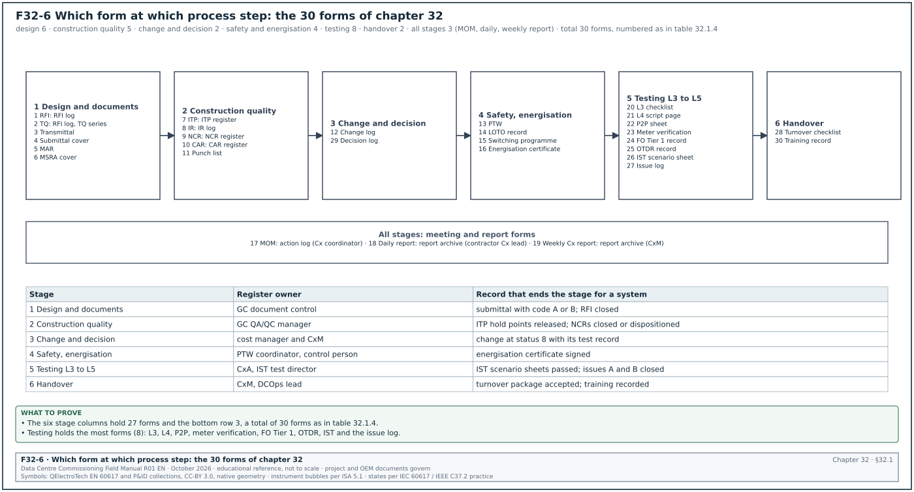
32.1.1The common header block
Every form on the MSC-1 programme starts with the same header block. The header lets the common data environment (CDE) file the form, lets a reader find the system it belongs to, and shows whether the form is a draft or a signed record. The field names follow the container naming of chapter 04 (section 04.4) and the test record identifier of chapter 03 (section 03.16.2).
| Field | Type | Required | Example value | Filled by |
|---|---|---|---|---|
| Form code and form revision | text | Y | F-RFI rev 2 (the template revision) | document controller |
| Record number | text, unique | Y | RFI-B2-ELE-0142 | originator from the register |
| CDE container identifier | text, 7 fields | Y | MSC1-GCX-B2-XX-RI-W-0142 | document controller |
| Project, building, hall | pick list | Y | MSC-1, B2, DH3 | originator |
| System and asset tags | text list | Y | B2-DH3-UPS-A1 | originator |
| Record revision | text | Y | rev 0 (issued), rev A (draft) | originator |
| Status | pick list | Y | draft, open, answered, closed, void | register owner |
| Page | number | Y | page 1 of 2 | template |
The template revision and the record revision are two different fields. A record filled on an old template revision is returned by the document controller, because the old template may lack a field that a later revision added.
32.1.2Signature, date and time rules
- Sign with name and role. Every signature box holds the printed name, the role and the company. A signature without a printed name cannot be traced to the competence register.
- Write dates in one format. The MSC-1 forms use "14 Sep 2026" or the ISO format "2026-09-14". A date such as 09/10/26 is returned, because it can be read as September or October.
- Write times in 24-hour format. Switching programmes, permits and IST sheets record times to the minute ("09:47"). IST and sequence of events (SOE) records use the campus time server to the second.
- Sign only what you saw. A witness signs a step or a test only when present at it. A record signed after the event by a person who was absent is a false record.
- Correct with one line. An error on a paper form is struck through with one line, initialled and dated. Correction fluid and overwriting are not accepted.
32.1.3Required fields and the return rule
A field marked "Y" in the field tables of this chapter must be filled before the form leaves draft. A field that does not apply is filled with "not applicable" and a reason. A blank required field returns the form to the originator, and the response clock of the workflow starts only when the complete form is accepted. This rule comes from the RFI workflow in section 05.3.3 (status "returned") and is applied to every form in this chapter.
32.1.4Register of the forms in this chapter
The table lists the 30 forms with the section that defines each one and the register that keeps it. Figure F32-6 places each form at the process step where it is first raised.
| No. | Form | Defining section | Register it feeds | Owner of the register |
|---|---|---|---|---|
| 1 | RFI | 05.3 | RFI log (05.8.1) | general contractor (GC) document control |
| 2 | TQ | 05.11 | RFI log, TQ series | GC document control |
| 3 | Transmittal | 04.7 | transmittal register | issuing document controller |
| 4 | Submittal cover | 06.3.2 | submittal register (06.2.4) | GC document control |
| 5 | MAR | 06.7.2 | submittal register | GC document control |
| 6 | MSRA cover | 06.9.2 | document register | GC safety and quality control (QC) |
| 7 | ITP | 07.3 | ITP register (07.3.5) | GC quality assurance and quality control (QA/QC) manager |
| 8 | IR | 07.5.2 | IR log (07.5.7) | GC QA/QC manager |
| 9 | NCR | 09.3 | NCR register (09.5.2) | GC QA/QC manager |
| 10 | CAR | 09.7.2 | CAR register | GC QA/QC manager |
| 11 | Punch list | 09.8.4 | punch list | CxM |
| 12 | Change log | 08.10 | change register | cost manager and CxM |
| 13 | PTW | 10.1.4 | permit register (10.1.7) | PTW coordinator |
| 14 | LOTO record | 10.2.5, 10.2.7 | lock and tag register | isolating authority |
| 15 | Switching programme | 10.4.3 | switching programme register | control person |
| 16 | Energisation certificate | 10.5.4 | energisation register | CxM |
| 17 | MOM | 11.3.1 | action log (11.4.1) | Cx coordinator |
| 18 | Daily report | 11.5.2 | report archive | contractor Cx lead |
| 19 | Weekly Cx report | 11.6.2 | report archive | CxM |
| 20 | L3 checklist | 03.8 | test register (03.17.3) | commissioning authority (CxA) |
| 21 | L4 script page | 03.9 | test register | CxA |
| 22 | P2P sheet | 22.6 | test register | controls contractor |
| 23 | Meter verification sheet | 24.6 | test register | electrical power monitoring system (EPMS) contractor |
| 24 | FO test record | 26.8.5 | cabling test register | cabling contractor |
| 25 | OTDR record | 26.9.7 | cabling test register | cabling contractor |
| 26 | IST scenario sheet | 03.10.2, 28.3 | IST register | IST test director |
| 27 | Issue log | 03.11.1, 09.9.1, 28.15.3 | issues log | CxA |
| 28 | Turnover checklist | 12.3 | turnover register | CxM |
| 29 | Decision log | 32.4.2 | decision log | CxM |
| 30 | Training record | 12.9.3 | training register | data-centre operations (DCOps) lead |
32.2Document and query forms

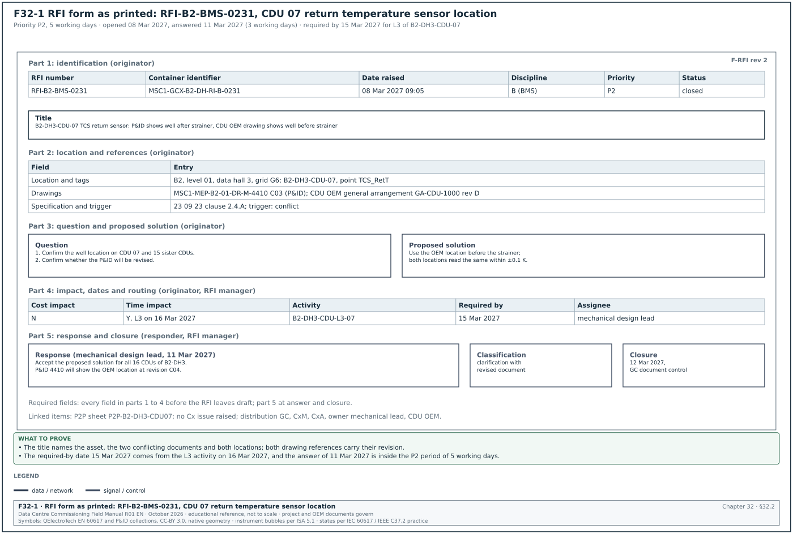
32.2.1Request for information (RFI) form
Purpose: The RFI form asks the designer a written question about a conflict, an omission or an ambiguity in the contract documents, and records the signed answer. It is defined in sections 05.3.1 field list, 05.3.3 status values and 05.5.3 priority classes. It is the record that lets the contractor proceed on a documented answer, and it is the first link from a site question to a change, an NCR or a commissioning issue.
| Field | Type | Required | Example value | Filled by |
|---|---|---|---|---|
| RFI number | text | Y | RFI-B2-ELE-0142 | GC document control |
| Container identifier | text, 7 fields | Y | MSC1-GCX-B2-XX-RI-W-0142 | GC document control |
| Title | text, ≤ 100 characters | Y | B2 block LV main CT ratio: SLD 4000/5 A vs schedule 3200/5 A | originator |
| Date raised | date and time | Y | 03 Jun 2026 10:15 | originator |
| Originator | name, company, role | Y | R. Wibowo, LV switchboard subcontractor, project engineer | originator |
| Discipline | code | Y | ELE (electrical) | originator |
| Location | building, level, room | Y | B2, level 00, LV room B2-00-LV3 | originator |
| Asset tags | list | Y | B2-DH3-LVMSB-A1 | originator |
| Drawing references with revision | list | Y | MSC1-EDC-B2-00-DR-E-2101 C02 | originator |
| Specification references | section and clause | Y | 26 24 13 clause 2.6.B | originator |
| Trigger | pick list | Y | conflict, missing information, ambiguity, field condition, coordination clash | originator |
| Question | text | Y | one question or numbered sub-questions on one subject | originator |
| Proposed solution | text | Y | 4000/5 A class 0.5S current transformer (CT) per the single-line diagram (SLD) of the low voltage (LV) main | originator |
| Cost impact | Y, N, unknown | Y | N | originator |
| Time impact | Y, N, unknown | Y | Y, if no answer by 10 Jun | originator |
| Activity affected | programme ID | Y | B2-LV-FAT-03 | originator |
| Required-by date | date | Y | 10 Jun 2026 | originator |
| Priority | P1, P2, P3 | Y | P2 (5 working days) | originator, confirmed by RFI manager |
| Assignee | name and role | Y | electrical design lead | RFI manager |
| Distribution | list | Y | GC, CxM, CxA, owner electrical lead | RFI manager |
| Attachments | named files | N | nameplate photo, marked-up SLD extract | originator |
| Response | text, signed | Y at answer | see filled example | responder |
| Response classification | pick list | Y at answer | clarification; clarification with revised document; change required; returned | responder |
| Documents to be revised | list | Y at answer | none, or document and new revision | responder |
| Linked items | list | N | NCR, Cx issue, change order numbers | RFI manager |
| Status | pick list | Y | draft, open, answered, closed, void, returned | RFI manager |
| Closure date and by | date, name | Y at close | 09 Jun 2026, GC document control | RFI manager |
Worked example: RFI-B2-BMS-0231 raised by the controls subcontractor on the coolant distribution unit (CDU) 07 return-temperature sensor of hall B2-DH3. The response period for priority P2 is 5 working days; the RFI was opened on Monday 08 Mar 2027 and answered on Thursday 11 Mar 2027, 3 working days later. Figure F32-1 shows this RFI as it prints.
| Field | Entry |
|---|---|
| RFI number and container | RFI-B2-BMS-0231; MSC1-GCX-B2-DH-RI-B-0231 |
| Title | B2-DH3-CDU-07 technology cooling system (TCS) return temperature sensor: piping and instrumentation diagram (P&ID) shows well after strainer, CDU original equipment manufacturer (OEM) drawing shows well before strainer |
| Date raised | 08 Mar 2027 09:05 |
| Originator | A. Siregar, controls subcontractor, commissioning engineer |
| Discipline and location | building management system (BMS); B2, level 01, data hall 3, grid G6 |
| Asset tags | B2-DH3-CDU-07, point TCS_RetT |
| Drawing references | MSC1-MEP-B2-01-DR-M-4410 C03 (P&ID); CDU OEM general arrangement GA-CDU-1000 rev D |
| Specification references | 23 09 23 clause 2.4.A (example clause: sensor location upstream of devices that add heat or mix flow) |
| Trigger | conflict |
| Question | 1. Confirm the location of the TCS return temperature well on CDU 07 and the 15 sister CDUs of hall 3. 2. Confirm whether the P&ID will be revised. |
| Proposed solution | Use the OEM location before the strainer; the strainer adds no heat, so either location reads the same return temperature within ±0.1 K. |
| Cost impact, time impact | N; Y, the L3 checklist of CDU 07 on 16 Mar 2027 needs the answer |
| Activity affected, required-by date | B2-DH3-CDU-L3-07; 15 Mar 2027 |
| Priority and assignee | P2; mechanical design lead |
| Distribution | GC document control, CxM, CxA, owner mechanical lead, CDU OEM |
| Response | Accept the proposed solution for all 16 CDUs of B2-DH3. The P&ID will show the OEM location at revision C04. |
| Responder and date | mechanical design lead, 11 Mar 2027 |
| Classification | clarification with revised document |
| Documents to be revised | MSC1-MEP-B2-01-DR-M-4410 C04 |
| Linked items | Cx issue: none raised; P2P sheet P2P-B2-DH3-CDU07 |
| Status and closure | closed, 12 Mar 2027, GC document control after originator confirmation |
Common errors:
- Two subjects in one RFI. The originator asks about the sensor location and about the pump speed signal in one form. The answer to one subject closes the RFI while the second stays unanswered. Each subject gets its own number (section 05.3.2).
- Drawing reference without revision. "See P&ID 4410" does not say which revision the originator read. The responder may answer against a newer revision and the conflict is never seen. Every reference carries its revision code.
- No proposed solution. An RFI without a proposed solution takes longer to answer, and the RFI manager on MSC-1 returns it. The originator always states the answer that the contractor would use.
- Required-by date copied from the priority. The required-by date comes from the programme activity, and the priority comes from the required-by date. A P1 RFI must name the activity that is stopped and its planned date.
- Closed by the responder. The responder answers; the RFI manager closes only after the originator confirms that the answer is usable. An RFI closed at "answered" hides answers that the site cannot use.
32.2.2Technical query (TQ) form
Purpose: A supplier or manufacturer uses the TQ form under a purchase order to ask about, or to propose a deviation from, the equipment specification before manufacture. It is defined in sections 05.11.1 use of the TQ and 05.11.2 fields in addition to the RFI fields. It carries the RFI fields plus six supply fields, so that the effect of the deviation on type tests, the factory acceptance test (FAT) and the spares list is decided before the equipment is built.

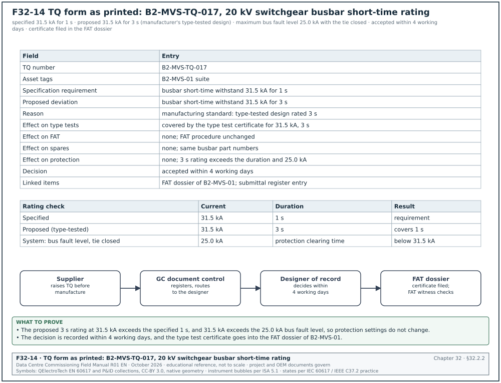
| Field | Type | Required | Example value | Filled by |
|---|---|---|---|---|
| TQ number | text | Y | B2-MVS-TQ-017 | GC document control |
| Purchase order number | text | Y | PO-MSC1-E-0021 (example) | supplier |
| Supplier document number and revision | text | Y | supplier drawing GA-MVS-B2 rev 2 | supplier |
| Specification clause | section and clause | Y | 26 13 00 clause 2.3 (example) | supplier |
| Question or proposed deviation | text | Y | exact change from the specification | supplier |
| Reason for the deviation | pick list and text | Y | availability, manufacturing standard, type test coverage | supplier |
| Effect on type tests | text | Y | covered by type test certificate (number) | supplier |
| Effect on FAT | text | Y | FAT procedure unchanged, or the changed step | supplier |
| Effect on spares and maintenance | text | Y | new part number enters the spares list, or none | supplier |
| Required-by date | date | Y | the manufacturing release date | supplier |
| Response and decision | accepted, accepted with conditions, rejected | Y at answer | accepted | designer |
| Responder and date | name, date | Y at answer | electrical engineer, 4 working days after receipt | designer |
| Linked items | list | N | FAT procedure, submittal, change number | GC document control |
Worked example: TQ B2-MVS-TQ-017 from the 20 kV switchgear manufacturer (section 05.11.2). Figure F32-14 shows the TQ as printed, the rating check and the route of the TQ to the FAT dossier. In the MSC-1 worked example the switchgear class is 31.5 kA and the maximum 20 kV bus fault level with the bus tie closed is 25.0 kA.
| Field | Entry |
|---|---|
| TQ number | B2-MVS-TQ-017 |
| Asset tags | B2-MVS-01 suite |
| Specification requirement | busbar short-time withstand 31.5 kA for 1 s |
| Proposed deviation | busbar short-time withstand 31.5 kA for 3 s |
| Reason | manufacturing standard: the manufacturer's type-tested design is rated for 3 s |
| Effect on type tests | covered by the manufacturer's type test certificate for 31.5 kA, 3 s |
| Effect on FAT | none; FAT procedure unchanged |
| Effect on spares | none; same busbar part numbers |
| Effect on protection | none; the 3 s rating exceeds the specified duration and the fault level of 25.0 kA |
| Decision | accepted within 4 working days |
| Responder note | "accepted; no change to protection settings; type test certificate to be attached to the FAT dossier" |
| Linked items | FAT dossier of B2-MVS-01; submittal register entry for the switchgear |
A TQ that is accepted with a type test certificate still needs the certificate filed in the FAT dossier, because the FAT witness checks the rating plate against the accepted TQ.
Common errors:
- TQ used after manufacture. The supplier sends a TQ when the panels are already built. The deviation is then a nonconformity, and an NCR with a concession is the correct record (section 09.6).
- Effect on type tests left blank. A deviation in busbar rating, enclosure or arc classification may leave the design outside its type test. The designer cannot accept the TQ without the certificate number.
- Spares effect ignored. A changed fan, relay or breaker part number enters the spares list (chapter 12) without anyone noting it. The spares register then lists the wrong part.
- TQ answered by the procurement team. A technical deviation is decided by the designer of record. A procurement signature on a TQ has no technical authority.
32.2.3Transmittal form
Purpose: The transmittal records which documents, at which revision, were sent from one organisation to another, for what purpose and when the recipient acknowledged them. It is defined in sections 04.7.2 transmittal fields and 04.7.3 workflow. It is the proof that a superseded revision was withdrawn and that the site works from the current revision.
| Field | Type | Required | Example value | Filled by |
|---|---|---|---|---|
| Transmittal number | text | Y | MSC1-EDC-TR-0418 | issuing document controller |
| Date and time sent | date and time | Y | 15 Jun 2026 14:20 | issuing document controller |
| From | organisation and person | Y | electrical designer, document controller DC-01 | issuing document controller |
| To | list | Y | GC document control; medium voltage (MV) switchgear subcontractor; CxM | issuing document controller |
| Copy to | list | N | owner electrical lead; CxA | issuing document controller |
| Purpose of issue | code | Y | for construction, for review, for information, for coordination, for tender, for record | issuer |
| Documents | table: identifier, title, revision, status, format, copies | Y | see filled example | issuer |
| Reason for issue | text | Y | revision C02 after RFI-B2-ELE-0142 | issuer |
| Response required | yes or no | Y | yes, acknowledgement | issuer |
| Response due | date | Y if response required | 17 Jun 2026 (2 working days) | issuer |
| Superseded documents | list | Y if a revision | MSC1-EDC-B2-00-DR-E-2101 C01 | issuer |
| Instruction to recipient | text | N | withdraw C01 prints from MV room B2-00-MV1 | issuer |
| Acknowledgement | name, date and time | Y | received by DC-GC-03, 15 Jun 2026 16:05 | recipient |
Worked example: Transmittal of the approved L4 chiller staging script to the contractors for use.
| Field | Entry |
|---|---|
| Transmittal number | MSC1-CXA-TR-0733 |
| Date and time sent | 02 Apr 2027 11:30 |
| From | CxA document controller |
| To | mechanical contractor; controls integrator; chiller OEM |
| Copy to | CxM; DCOps lead B2 |
| Purpose of issue | for construction (use on site) |
| Documents | MEC-L4-CHW-B2-STG-01, "Chiller staging, building B2", rev C, status A1 (authorised), PDF, 1 electronic copy |
| Reason for issue | revision C incorporates the CxM comments on steps 10 and 19 (timer values) |
| Response required, due | yes, acknowledgement by 06 Apr 2027 (2 working days) |
| Superseded documents | MEC-L4-CHW-B2-STG-01 rev B |
| Instruction to recipient | remove rev B from the test folder in the B2 chiller hall; use rev C for the test on 14 Apr 2027 |
| Acknowledgement | mechanical contractor DC, 02 Apr 2027 15:10; controls integrator, 05 Apr 2027 09:00; chiller OEM, 05 Apr 2027 10:20 |
Common errors:
- Superseded field left blank. The transmittal issues rev C and does not name rev B. The site copy of rev B stays in the folder and the test is run on it. The superseded field is required whenever the revision is above the first issue.
- Purpose "for information" on a construction issue. A document issued for information cannot be built from. The purpose code decides what work the recipient may do.
- Acknowledgement never chased. An unacknowledged transmittal gives no proof of receipt. The issuer lists acknowledgements outstanding beyond 2 working days in the weekly document report.
- Documents listed without status code. The CDE suitability code (chapter 04, section 04.3.1) tells the recipient whether the document is authorised. A list without it forces the recipient to look it up in the CDE.
32.2.4Submittal cover sheet
Purpose: The submittal cover sheet heads every package of product data, shop drawings or samples that a contractor sends for review, and it states what is submitted, against which specification, with which deviations. It is defined in sections 06.3.2 cover sheet fields, 06.4.2 review periods and 06.5 review stamps. The reviewer's code (A, B, C or D, section 04.6.1) is written on the same sheet, so the cover is also the record of what work the code allows.

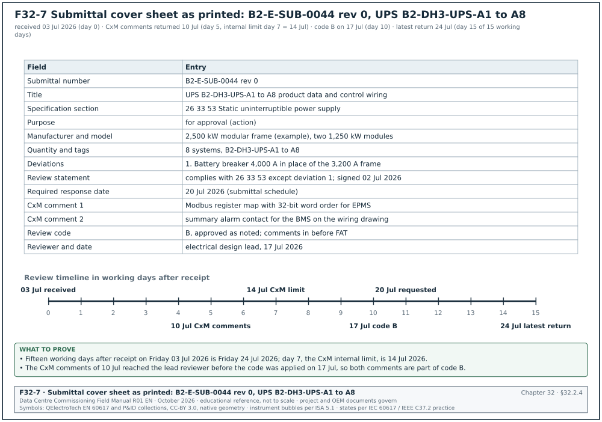
| Field | Type | Required | Example value | Filled by |
|---|---|---|---|---|
| Submittal number and revision | text | Y | B2-E-SUB-0044 rev 0 | GC document control |
| Title | text | Y | uninterruptible power supply (UPS) B2-DH3-UPS-A1 to A8 product data and control wiring | contractor |
| Specification sections | list | Y | 26 33 53 | contractor |
| Purpose | for approval (action), for information | Y | for approval (action) | contractor |
| Manufacturer and model | text | Y | UPS manufacturer, 2,500 kW modular frame (example) | contractor |
| Quantity and tags | text | Y | 8, B2-DH3-UPS-A1 to A8 | contractor |
| Deviations | numbered list or "none" | Y | 1. battery breaker 4,000 A frame in place of 3,200 A | contractor |
| Contractor's review statement | text and signature | Y | reviewed and found to comply except as listed | contractor's reviewer |
| Previous submission and code | text | Y | none, or rev and code | contractor |
| Required response date | date | Y | 20 Jul 2026 | contractor from the submittal schedule |
| Review code | A, B, C, D | Y at review | B | lead reviewer |
| Reviewer comments and CxM comments | numbered list | Y if code B, C or D | see filled example | lead reviewer, CxM |
| Reviewer name and date | text | Y at review | electrical design lead, 17 Jul 2026 | lead reviewer |
Worked example: Submittal B2-E-SUB-0044 rev 0 for the eight UPS systems of hall B2-DH3. The submittal was received on 03 Jul 2026. Typical hyperscale practice gives 15 working days for UPS packages (section 06.4.2), so the latest return date is 24 Jul 2026. The CxM comments were due on working day 7 after receipt (14 Jul 2026). Figure F32-7 shows the cover sheet as printed and the review timeline in working days.
| Field | Entry |
|---|---|
| Submittal number | B2-E-SUB-0044 rev 0 |
| Title | UPS B2-DH3-UPS-A1 to A8 product data and control wiring |
| Specification section | 26 33 53 Static uninterruptible power supply |
| Purpose | for approval (action) |
| Manufacturer and model | UPS manufacturer, 2,500 kW modular frame (example), two 1,250 kW modules per system |
| Quantity and tags | 8 systems, B2-DH3-UPS-A1 to A8 |
| Deviations | 1. Battery breaker rated 4,000 A in place of the specified 3,200 A frame. |
| Contractor's review statement | "Reviewed and found to comply with 26 33 53 except deviation 1." signed by the electrical subcontractor's engineer, 02 Jul 2026 |
| Previous submission | none |
| Required response date | 20 Jul 2026 |
| CxM comments (returned 10 Jul 2026) | 1. Provide the Modbus register map with the 32-bit word order for EPMS points. 2. Show the summary alarm contact for the BMS on the control wiring drawing. |
| Review code | B, approved as noted; comments to be incorporated before FAT |
| Reviewer and date | electrical design lead, 17 Jul 2026 |
Common errors:
- Deviation hidden in the datasheet. The contractor marks "none" under deviations while the datasheet shows a different breaker frame. The reviewer reads the datasheet line by line against the specification and returns the package with code C when an undeclared deviation is found.
- No contractor's review statement. A package that the contractor has not reviewed is returned unreviewed. The statement and signature are required before the review clock starts.
- Commissioning review omitted. The CxM receives the package after the code is applied. A CxM comment received after the code is applied cannot be added to that review (section 06.4.2), so the CxM sets day 7 as the internal return date.
- Code B treated as code C. Under code B the contractor proceeds and incorporates the comments; under code C fabrication of the affected items stops. The cover sheet states the code in words beside the letter.
32.2.5Material approval request (MAR) form
Purpose: The MAR asks the Engineer to approve a specific material or product, with its manufacturer, product code and compliance statement against the specification, before the material is ordered for site. It is defined in sections 06.7.2 MAR fields, 06.7.3 compliance statement and 06.7.4 samples. The approved sample is labelled with the MAR number, so the receiving inspection can compare every delivery with the approved product.
| Field | Type | Required | Example value | Filled by |
|---|---|---|---|---|
| MAR number | text | Y | MAR B2-FO-0011 | GC document control |
| Material | text | Y | OS2 single-mode fibre cable, 144 fibres, loose tube | contractor |
| Specification section and clause | text | Y | 27 13 23 clause 2.2 | contractor |
| Manufacturer and product code | text | Y | manufacturer and catalogue number (example) | contractor |
| Country of origin | text | Y | as declared | contractor |
| Compliance statement | table: specified property, offered value, document | Y | see filled example | contractor |
| Deviations | numbered list or "none" | Y | none | contractor |
| Supporting documents | list | Y | datasheet, test report, certificate of conformity, sample | contractor |
| Sample reference | text | Y if a sample is required | sample S-FO-011, sample room shelf 3 | contractor |
| Quantity and areas of use | text | Y | 18 km, building 2 backbone | contractor |
| Required approval date | date | Y | 19 Nov 2026 | contractor |
| Review code | A, B, C, D | Y at review | A | Engineer |
| Approved sample label | signed label | Y if a sample | label with MAR number and date | Engineer |
Worked example: MAR B2-FO-0011 for the building B2 backbone fibre. The specified attenuation limit is the ANSI/TIA-568.3-D maximum (check against ANSI/TIA-568.3-E) for indoor-outdoor single-mode cable, 0.5 dB/km at 1310 nm and 1550 nm (chapter 26, section 26.5); the offered values are example datasheet values.
| Field | Entry |
|---|---|
| MAR number | MAR B2-FO-0011 |
| Material | OS2 single-mode indoor-outdoor fibre cable, 144 fibres, loose tube |
| Specification | 27 13 23 clause 2.2 |
| Manufacturer and product code | manufacturer and catalogue number (example) |
| Compliance row 1 | fibre type OS2 (specified) / OS2, ITU-T G.652.D (offered) / datasheet page 2 |
| Compliance row 2 | attenuation at 1310 nm ≤ 0.5 dB/km (specified) / 0.40 dB/km maximum (example datasheet value) / datasheet page 3 |
| Compliance row 3 | attenuation at 1550 nm ≤ 0.5 dB/km (specified) / 0.30 dB/km maximum (example datasheet value) / datasheet page 3 |
| Compliance row 4 | fibre count 144 (specified) / 144, 12 tubes of 12 fibres (offered) / datasheet page 1 |
| Deviations | none |
| Supporting documents | datasheet rev 5; factory test report; certificate of conformity; sample |
| Sample reference | S-FO-011, site sample room, shelf 3 |
| Quantity and areas of use | 18 km, building 2 backbone from the main distribution frame (MDF) to the hall distribution frames and the campus core |
| Required approval date | 19 Nov 2026 |
| Review code and date | A, approved, 12 Nov 2026 |
| Approved sample label | signed by the Engineer's representative, 12 Nov 2026, fixed to sample S-FO-011 |
Common errors:
- Compliance statement copied from the specification. The contractor writes "complies" in every row without the offered value. The reviewer cannot check a statement that holds no number, and returns the MAR.
- Sample not labelled. The approved sample stays in the room without a label. Six months later nobody can say which sample was approved. The label carries the MAR number, the review code and the date.
- Delivery not compared with the MAR. The receiving inspection checks only the quantity. The ITP line for delivery inspection (section 07.9.2, line 2.1) names the MAR number as the reference.
- One MAR for two products. A MAR that covers two cable types from two manufacturers gets one code for both. Each product gets its own MAR.
32.2.6Method statement and risk assessment (MSRA) cover sheet
Purpose: The MSRA cover sheet heads the method statement and risk assessment for one task and records its scope, its references, its approval chain and its risk scores before and after controls. It is defined in sections 06.9.2 MSRA structure, 06.9.3 risk rating method and 06.9.5 review procedure. The permit issuer checks the MSRA number and revision on this sheet before issuing a permit for the task (chapter 10, section 10.1.4).
| Field | Type | Required | Example value | Filled by |
|---|---|---|---|---|
| MSRA identifier and revision | text | Y | MSC1-MSW-B2-00-MS-X-0004 rev 1 | contractor |
| Task title | text | Y | first energisation of B2-MVS-01 | contractor |
| Location and equipment tags | text | Y | room B2-00-MV1; B2-MVS-01 | contractor |
| Start and end of the task | dates | Y | planned window | contractor |
| References | list | Y | SLD, relay setting file, OEM manuals, ITP, test scripts | contractor |
| Organisation and competence | roles, names, certificates | Y | authorised person, competent persons, K3 Listrik certificates | contractor |
| Prerequisites | list | Y | L2 checklists signed, very low frequency (VLF) and partial discharge (PD) results recorded | contractor |
| Plant, tools and instruments | list with calibration status | Y | voltage detector rated 24 kV, relay test set | contractor |
| Hold points in the sequence | list of step numbers | Y | steps with hold points | contractor |
| Highest risk score before controls | L × S | Y | 3 × 5 = 15 (high) | contractor |
| Highest risk score after controls | L × S | Y | 1 × 5 = 5 (low) | contractor |
| Emergency arrangements | text | Y | rescue hook, insulated mat, first aider, radio channel | contractor |
| Briefing record reference | text | Y | toolbox talk sheet number | contractor supervisor |
| Prepared, reviewed, approved | names, roles, dates | Y | contractor health, safety and environment (HSE) manager, GC, CxM, owner | each signatory |
| Review code | A, B, C, D | Y | B | GC reviewer |
Worked example: MSRA cover for the first energisation of 20 kV switchgear B2-MVS-01 (section 06.9.2 example and 06.9.3 worked example). The risk method is the 5 × 5 matrix: scores 15 to 25 are high and the task does not start, 8 to 12 are medium, 1 to 6 are low.
| Field | Entry |
|---|---|
| Identifier and revision | MSC1-MSW-B2-00-MS-X-0004 rev 1 |
| Task | first energisation of suite B2-MVS-01 from the 20 kV feeder, room B2-00-MV1 |
| References | SLD MSC1-EDC-B2-00-DR-E-2101 C02; relay setting file MSC1-EDC-B2-ZZ-CA-E-0301 C01; ITP-ELE-MV-002 rev 1; switching programme SP-B2-HV-003 (example number) |
| Organisation | senior authorised person (switching), competent persons, CxM witness, Ahli K3 Listrik |
| Prerequisites | Level 2 checklists signed; VLF and PD results recorded; relay secondary injection done; earthing tests passed |
| Instruments | voltage detector rated for 24 kV; phasing sticks; insulation tester; relay test set, each with calibration certificate |
| Hazard with the highest score | internal arc when the incoming feeder breaker closes onto a fault |
| Score before controls | likelihood 3 × severity 5 = 15, high |
| Controls | remote closing at the distance set by the arc flash study; VLF and PD results within limits; covers closed; exclusion zone 3 m from the switchgear front; no person in front of the switchgear |
| Score after controls | likelihood 1 × severity 5 = 5, low |
| Emergency arrangements | rescue hook and insulated mat at the room door; first aider named; radio channel 3 |
| Briefing record | toolbox talk sheet TT-B2-MV-0004 |
| Approvals | contractor HSE and project manager; GC reviewer code B; CxM reviewed; owner representative |
Common errors:
- Only one risk score. The MSRA gives the score after controls and omits the score before controls. The reviewer cannot see whether the controls are the reason the task is acceptable. The MSRA records both scores and the controls.
- Prerequisites written as intentions. "Tests will be done" is not a prerequisite. Each prerequisite names the record, for example "VLF record TS-02-02 signed".
- Generic MSRA reused. An MSRA written for building B1 is reused for B2 with the B1 tags and room numbers. The permit issuer compares the tags on the cover sheet with the permit request and refuses a mismatch.
- Revision on the permit differs from the approved revision. The permit lists rev 0 while rev 1 is approved. The permit issuer checks the revision against the document register.
32.3Quality forms
32.3.1Inspection and test plan (ITP) form
Purpose: The ITP lists, in construction order, every inspection and test of one work package, with the acceptance criterion, the record and the intervention code of each party. It is defined in sections 07.3.1 header block, 07.3.2 line columns and 07.2.1 intervention codes. It is the plan that the IR, the checklists and the test sheets execute, and it decides which activities stop the work until a written release.
The ITP has a header block and a line table. The field table covers both.
| Field | Type | Required | Example value | Filled by |
|---|---|---|---|---|
| ITP number | text, unique | Y | ITP-ELE-MV-002 | contractor QC engineer |
| Revision and date | text and date | Y | rev 1, 14 May 2026 | contractor QC engineer |
| Title | text | Y | MV cable installation and testing, 20 kV, 3 × 1C 630 mm² Cu cross-linked polyethylene (XLPE) | contractor QC engineer |
| Project, building, area | text | Y | MSC-1, B2, MV room to block transformer rooms | contractor QC engineer |
| Specification sections | list | Y | 26 05 13; 26 08 00 | contractor QC engineer |
| Drawings and method statements | list with revisions | Y | B2-E-MV-101 rev C; MS-ELE-MV-004 rev 1 | contractor QC engineer |
| Prepared, reviewed, approved | names, roles, dates | Y | subcontractor QC; GC QA/QC manager; Engineer; CxM reviewed | each signatory |
| Review code | A, B, C | Y | B | Engineer |
| Legend | text | Y | P perform, H hold, W witness, R review, S surveillance, M monitor | template |
| Line number | number | Y | 3.4 | contractor QC engineer |
| Activity | full action sentence | Y | inspect cables in ducts before duct sealing and backfill | contractor QC engineer |
| Reference | document and clause | Y | MS-ELE-MV-004 section 6 | contractor QC engineer |
| Acceptance criterion with source | value or condition | Y | duct seals fitted; cables identified at both ends | contractor QC engineer |
| Frequency or extent | text | Y | every cable pull | contractor QC engineer |
| Verifying document | record ID | Y | CL-02-06 and IR | contractor QC engineer |
| Party codes | P, H, W, R, S, M per party | Y | GC H / ENG H / CX - | contractor, agreed at review |
| Remarks | text | N | permit, instrument, interface | contractor QC engineer |
Worked example: Six lines of ITP-ELE-MV-002 rev 1 for the 20 kV cables of building B2 (lines from section 07.9.2). The party columns are GC (GC), Engineer (ENG) and commissioning (CX).
| Line | Activity | Acceptance criterion (source) | Record | GC / ENG / CX |
|---|---|---|---|---|
| 1.2 | Review calibration of IR tester, VLF set, PD system and dynamometer | certificate valid on the test day (quality plan 7.8) | measuring and test equipment (M&TE) register extract | R / R / R |
| 3.2 | Measure pulling tension during each pull | maximum below the manufacturer limit for the pulling method | tension record CL-02-04 | W / W / - |
| 3.4 | Inspect cables in ducts before duct sealing and backfill | duct seals fitted; cables identified at both ends | IR and CL-02-06 | H / H / - |
| 5.1 | Measure insulation resistance of each core before VLF | at least the NETA ATS-2025 value for the voltage class; values at 1 min | test sheet TS-02-01 | W / W / W |
| 5.2 | Perform VLF withstand test on each core | no breakdown at the test voltage and duration in IEEE 400.2 and the specification | TS-02-02 | H / W / W |
| 6.3 | Ready for L3 energisation | all lines released or accepted; punch A and B items closed | release form | H / H / H |
A hold point stops the work until a written release is received. A witness point lets the work continue after the notice period when the notified party does not attend, and the record then states "notified, not attended" (section 07.2.1).
Common errors:
- Acceptance criterion without a value. "As per specification" gives the inspector nothing to measure. The criterion names the value or the condition and its source clause (section 07.3.3).
- Hold point given to every line. An ITP with 40 hold points stops the work 40 times and the inspectors cannot attend them all. Hold points are kept for activities that are covered up or energised next, such as lines 3.4, 5.2 and 6.3.
- CxM column missing. The ITP has columns for the contractor and the Engineer only. The CxM then has no witness right on the VLF test. The CxM reviews every ITP for the systems in the commissioning plan and asks for a CX column.
- Line numbers changed between revisions. Rev 1 renumbers the lines and the IR log still quotes the rev 0 numbers. The IR records the ITP number, revision and line together.
32.3.2Inspection request (IR) form
Purpose: The IR gives formal notice that work at an ITP intervention point is ready, records the inspection and its result, and releases or rejects a hold point in writing. It is defined in sections 07.5.2 IR form fields, 07.5.3 notice periods and 07.5.4 response codes. It is the record that proves a covered-up or energised item was inspected before it was covered or energised.
| Field | Type | Required | Example value | Filled by |
|---|---|---|---|---|
| IR number | text, unique | Y | IR-B2-ELE-0457 | contractor QC engineer |
| ITP number, revision and line | text | Y | ITP-ELE-MV-002 rev 1, line 3.4 | contractor QC engineer |
| Intervention code per party | text | Y | ENG H, CX W, GC H | contractor QC engineer |
| Work description | text | Y | cable route B2-MV-F07, duct bank DB-03 to DB-05 | contractor QC engineer |
| Location and grid | text | Y | B2 external, grid C4 to C9 | contractor QC engineer |
| System and asset tags | list | Y | B2-MV-F07-L1, -L2, -L3 | contractor QC engineer |
| Date and time requested | date, time | Y | 21 May 2026, 09:00 | contractor QC engineer |
| Date and time submitted | date, time | Y | 19 May 2026, 08:15 | document control system |
| Notice period given | working hours | Y | 18.75 working hours | contractor QC engineer |
| Self-inspection completed | yes or no, signature | Y | yes, subcontractor QC engineer, 18 May 2026 | subcontractor QC engineer |
| Attachments | list | Y | checklist CL-02-06, photos, drawing extract | contractor QC engineer |
| Permits required | list | Y | none, or the permit number | contractor QC engineer |
| Instruments and calibration | list | Y if a test | instrument, serial, certificate expiry | contractor QC engineer |
| Response code | A, B, C, NA, X | Y | A | inspector |
| Inspector comments | text | Y if code B or C | see filled example | inspector |
| Release or rejection signature | name, role, date, time | Y | Engineer's representative, 21 May 2026 09:40 | inspector |
| Re-inspection IR number | text | Y if code C | IR-B2-ELE-0457-R1 | contractor QC engineer |
Worked example: IR for the VLF withstand hold point on the three cores of feeder B2-MV-F07 (ITP line 5.2). A routine hold point needs 24 hours of notice; a hold point before energisation needs 48 hours, with the energisation permit request at the same time (section 07.5.3).
| Field | Entry |
|---|---|
| IR number | IR-B2-ELE-0498 |
| ITP line | ITP-ELE-MV-002 rev 1, line 5.2 |
| Intervention codes | GC H, ENG W, CX W |
| Work description | VLF withstand test on cores L1, L2 and L3 of feeder B2-MV-F07, test voltage and duration as specification 26 05 13 and IEEE 400.2 |
| Location | B2 MV room B2-00-MV1 panel P04 to block transformer room TX-04 |
| Date and time requested | Thursday 04 Jun 2026, 09:00 |
| Date and time submitted | Monday 01 Jun 2026, 14:00 (more than 48 hours of notice) |
| Self-inspection | yes; insulation resistance line 5.1 recorded on TS-02-01 on 03 Jun 2026 |
| Permits | sanction for test SFT-B2-E-0021; isolation certificate IC-B2-HV-0040 (example numbers) |
| Instruments | VLF test set s/n VLF-0193, certificate expiry 2027-01-31; insulation tester s/n IRT-0442, expiry 2026-12-15 |
| Response code | A, released |
| Inspector comments | no breakdown on any core; leakage readings recorded on TS-02-02; IR after VLF (line 5.5) to follow the same day |
| Release signature | Engineer's representative, 04 Jun 2026, 11:20; CxM witness signature 11:22 |
| Re-inspection IR | not applicable |
Common errors:
- Notice counted from the time sent by email. Notice periods count from the time the IR is received in the document control system. An IR emailed at 17:30 on a Friday gives no working hours of notice until Monday.
- Self-inspection skipped. The contractor raises the IR before its own QC engineer has checked the work. The inspector finds open items and the IR is rejected with code C, which counts as a failed IR in the key performance indicator (KPI).
- Witness absence not recorded. At a witness point the party does not attend and the contractor proceeds without writing it down. The IR is closed with code NA and the notice given, so the record shows the party was notified.
- Late cancellation not counted. A cancellation less than 4 working hours before the inspection counts as a failed IR in the KPI (section 07.5.4). The register records the cancellation time.
32.3.3Nonconformance report (NCR) form
Purpose: The NCR records work or material that does not meet a stated requirement, its containment, the approved disposition, the correction and the verification that closes it. It is defined in sections 09.3 NCR form fields, 09.4.1 severity, 09.5.1 workflow and 09.6.1 dispositions. It is the ISO 9001:2015 clause 8.7 record of the control of nonconforming outputs on the project. Figure F32-8 shows the order of questions that decides whether a finding is recorded as an NCR, a change, an RFI, a TQ or a punch item.

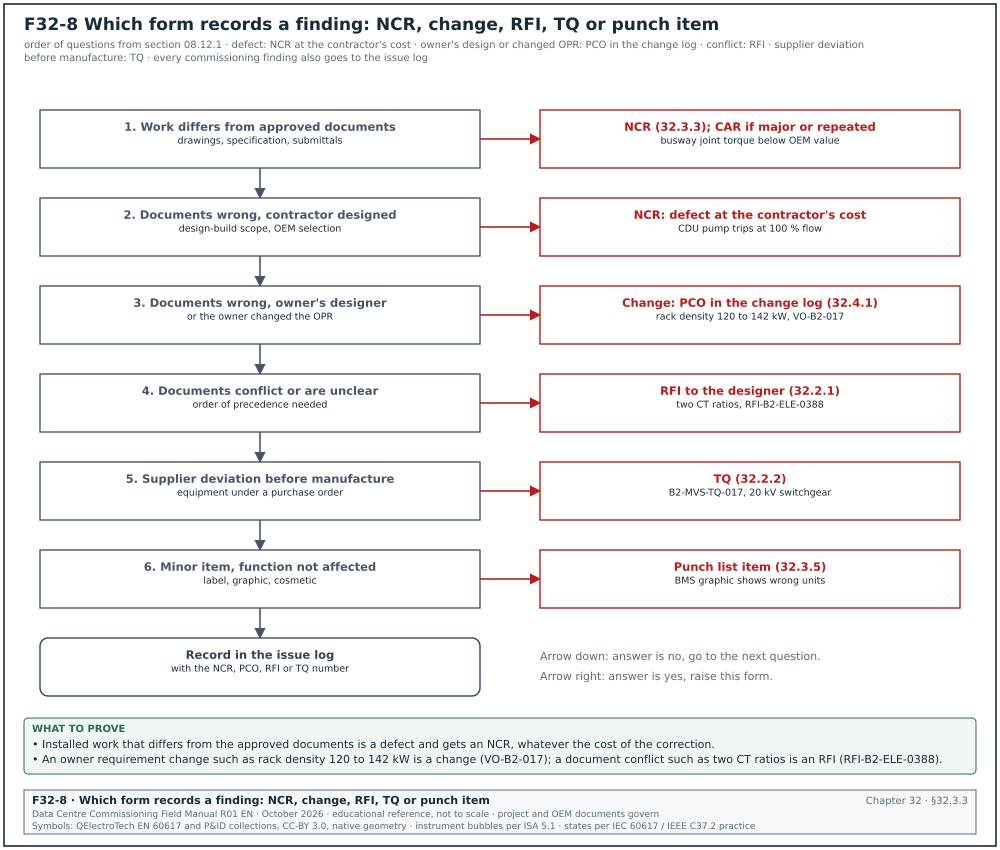
| Field | Type | Required | Example value | Filled by |
|---|---|---|---|---|
| NCR number | text, unique | Y | NCR-B2-ELE-0044 | QA/QC manager |
| Date raised | date | Y | 8 Sep 2026 | finder |
| Raised by | name, role, company | Y | Engineer's representative, electrical | finder |
| Project, building, room, grid | text | Y | MSC-1, B2, data hall 2, grid E4 to E9 | finder |
| System and asset tags | list | Y | B2-DH2-BW-03 joints J01 to J48 | finder |
| Discipline and package | code | Y | ELE, subcontractor ES-02 | finder |
| Source of detection | pick list | Y | ITP line, IR, punch walk, test, audit, supplier, client | finder |
| Reference IR or test record | text | Y | IR-B2-ELE-0711 | finder |
| Requirement not met | document and clause | Y | busway OEM manual section 5; spec 26 25 00 clause 3.2 | finder |
| Description of nonconformity | text with numbers | Y | 9 of 48 joints below label torque; no torque mark on 14 joints | finder |
| Severity | major, minor | Y | major | QA/QC manager |
| Origin category | pick list | Y | workmanship | QA/QC manager |
| Containment action taken | text | Y | run B2-DH2-BW-03 locked out; energisation permit withdrawn | subcontractor, within 1 working day |
| Proposed disposition | use as is, repair, rework, reject, regrade | Y | rework | subcontractor, within 3 working days |
| Proposed correction method | text | Y | re-torque all 48 joints with a calibrated wrench, mark, second-person check, insulation resistance test | subcontractor |
| Proposed by, date | name, date | Y | ES-02 QC engineer, 9 Sep 2026 | subcontractor |
| Disposition approved by, date | name, date | Y | Engineer's representative, 10 Sep 2026 | QA/QC manager (minor) or Engineer (major) |
| Designer input required | yes or no | Y | no (yes for use as is and repair) | Engineer |
| Correction completed, date | date | Y | 11 Sep 2026 | subcontractor |
| Verification method and record | text | Y | re-inspection IR-B2-ELE-0711-R1; torque record TQ-B2-DH2-BW-03 | inspector |
| Retest required | list | Y | insulation resistance test of the run; thermographic scan at L3 load | Engineer |
| Retest results | values and limits | Y | insulation resistance above 2,000 MΩ at 1,000 V DC (minimum 100 MΩ); scan on 15 Sep 2026 at 1.5 MW: 0.8 K between similar joints, below the 1 °C to 3 °C band of ANSI/NETA Acceptance Testing Specifications (ATS) Table 100.18 (section 14.13.2) | inspector |
| CAR required and number | yes or no, text | Y | yes, CAR-B2-ELE-0014 | QA/QC manager |
| Cost borne by | pick list | Y | contractor | QA/QC manager |
| Closed by, date | names, date | Y | GC-A QA/QC manager and Engineer, 16 Sep 2026 | QA/QC manager, Engineer |
Worked example: NCR on a Modbus register map version found during the EPMS point check of UPS B2-DH3-UPS-A3 (an example in the pattern of section 09.13.3). The NCR is major because a wrong alarm mapping affects the function of the monitoring system.
| Field | Entry |
|---|---|
| NCR number and date | NCR-B2-EPM-0019, 22 Feb 2027 |
| Raised by | CxA, EPMS witness |
| Location and tags | B2 data hall 3, UPS room A; B2-DH3-UPS-A3, EPMS device B2-DH3-UPS-A3-GW |
| Source and reference | test; point-to-point record EPMS-L3-B2-DH3-UPS-A3 rows 31 to 48 |
| Requirement not met | approved register map submittal B2-E-SUB-0044 rev 1 (map version 2.3); specification 26 09 13 |
| Description | the gateway holds register map version 2.1; 18 of 48 points read from the wrong registers; "battery breaker open" arrives at the EPMS as "fan fail" |
| Severity and origin | major; configuration |
| Containment | EPMS alarms of A3 flagged "under test" on the operator screen; L3 gate of A3 held |
| Proposed disposition and method | rework: load map version 2.3, repeat the 48-point P2P check |
| Approved by | Engineer's representative, 24 Feb 2027 |
| Correction completed | 25 Feb 2027 |
| Verification | P2P rerun EPMS-L3-B2-DH3-UPS-A3-RT1: 48 of 48 points pass |
| CAR | yes, CAR-B2-EPM-0003, because the same map version was found on A5 and A7 |
| Cost borne by | EPMS integrator |
| Closed by | GC QA/QC manager and Engineer, 01 Mar 2027; CxM confirmed closure |
Common errors:
- Description without numbers. "Busway joints not tight" cannot be verified. The description states how many items, which items and by how much: "9 of 48 joints below the label torque".
- Correction recorded as corrective action. Re-torquing the joints is the correction. Changing the method so that it does not happen again is corrective action, recorded on a CAR (section 09.1.2).
- Use as is without the designer. Use as is and repair always need a concession and the designer's written agreement (section 09.6.1). An NCR closed "use as is" with only the QA/QC manager's signature is reopened.
- Containment missing. The NCR describes the defect and the disposition but not the containment. Containment must be done within 1 working day, and for electrical work it means a lockout or withdrawal of the energisation permit.
- Retest not named. The joints are re-torqued and the NCR is closed without the insulation resistance and thermographic retests. The retest field lists every test that the correction invalidated.
32.3.4Corrective action request (CAR) form
Purpose: The CAR asks the responsible organisation to find the root cause of a major NCR, a repeated minor NCR or a process failure, to remove the cause and to prove that the action worked. It is defined in sections 09.7.1 when a CAR is raised, 09.7.2 CAR fields and 09.7.7 effectiveness. It is the ISO 9001:2015 clause 10.2 record of corrective action.
| Field | Type | Required | Example value | Filled by |
|---|---|---|---|---|
| CAR number | text | Y | CAR-B2-ELE-0014 | QA/QC manager |
| Linked NCRs | list | Y | NCR-B2-ELE-0044, -0046, -0049 | QA/QC manager |
| Issued to | company | Y | electrical subcontractor ES-02 | QA/QC manager |
| Problem statement | text with numbers | Y | 21 joints in 3 runs below OEM torque | QA/QC manager |
| Containment | text | Y | all B2 busway runs locked out pending torque audit | recipient |
| Root cause method and result | 5-why, cause-and-effect, 8D | Y | 5-why: see filled example | recipient |
| Corrective action | text | Y | method statement revised; torque marking; second-person check | recipient |
| Preventive action in other places | text | Y | same rule on switchboard bus links and generator terminal boxes | recipient |
| Owner of action and due date | name, date | Y | ES-02 construction manager, 30 Sep 2026 | recipient |
| Effectiveness check | method and sample | Y | torque audit on the next 3 busway runs | QA/QC manager |
| Effectiveness result | numbers | Y | 0 of 144 joints below torque | QA/QC manager |
| Closed by, date | name, date | Y | QA/QC manager, 27 Oct 2026 | QA/QC manager |
Worked example: CAR-B2-ELE-0014 for the busway joint torque NCRs of building B2 (section 09.7.2).
| Field | Entry |
|---|---|
| CAR number | CAR-B2-ELE-0014 |
| Linked NCRs | NCR-B2-ELE-0044, NCR-B2-ELE-0046, NCR-B2-ELE-0049 |
| Issued to | electrical subcontractor ES-02 |
| Problem statement | busway joints left below the OEM torque in halls 1 and 2; 21 joints in 3 runs |
| Containment | all busway runs in B2 locked out pending a torque audit |
| Why 1 | joints were below torque because the second pass of the torque wrench was not done |
| Why 2 | the second pass was not done because the installers marked the joint after the first pass |
| Why 3 | the installers marked after the first pass because the method statement did not say when to mark |
| Why 4 | the method statement did not say so because it was copied from a cable-tray method |
| Why 5 (root cause) | the method statement review checked format and not the OEM joint procedure |
| Corrective action | method statement revised to the OEM sequence; torque mark only after the final pass; second-person check; daily wrench check |
| Preventive action | same rule applied to switchboard bus links and generator terminal boxes |
| Owner and due date | ES-02 construction manager, 30 Sep 2026 |
| Effectiveness check | torque audit on the next 3 busway runs |
| Effectiveness result | 0 of 144 joints below torque, 26 Oct 2026 |
| Closed by | GC QA/QC manager, 27 Oct 2026 |
Common errors:
- Root cause stops at the person. "Installer error" is a symptom. The 5-why continues until it reaches a process that can be changed, such as the method statement review.
- Effectiveness check with no sample size. "Checked, fine" gives no measure. The check names the sample (the next 3 runs, 144 joints) and the result as a number.
- CAR closed on the action date. The CAR is closed only after the effectiveness result is recorded, which on MSC-1 was 4 weeks after the action.
- No preventive action in other places. The same method applies to other bolted joints. The CAR names every other place where the cause can act.
32.3.5Punch list form
Purpose: The punch list records each item that is incomplete or incorrect at a punch walk, with a category that decides by when it must be closed, and records the verification of each correction. It is defined in sections 09.8.2 punch categories, 09.8.4 punch list fields and 09.8.5 punch walk procedure. On MSC-1 the case ledger sets the ageing limits: category A 1 working day, B 7 working days, C 30 working days.
| Field | Type | Required | Example value | Filled by |
|---|---|---|---|---|
| Item number | text | Y | PL-B2-DH3-0587 | CxM |
| Date raised | date | Y | 6 Oct 2026 | CxM |
| Raised by | name, role | Y | CxM, building B2 | CxM |
| Punch walk reference | text | Y | PW-B2-DH3-L4-02 | CxM |
| Location and grid | text | Y | B2 data hall 3, grid G6 | CxM |
| System and asset tag | text | Y | B2-DH3-CDU-11 | CxM |
| Description | text | Y | leak detection cable not connected to terminal LD1 | CxM |
| Requirement | document and clause | Y | CDU OEM manual section 7.3; drawing B2-M-CDU-410 rev C | CxM |
| Category | A, B, C | Y | A | CxM |
| Responsible contractor | company | Y | mechanical subcontractor MS-01 | CxM |
| Due date | date from the category | Y | 7 Oct 2026 | calculated |
| Photograph before | file | Y | PL-0587-1.jpg | CxM |
| Action taken | text | Y at close | cable connected; leak simulated; alarm at CDU and BMS | contractor |
| Photograph after | file | Y at close | PL-0587-2.jpg | contractor |
| Verified by, date | name, date | Y at close | CxM, 7 Oct 2026 | CxM |
| Status | open, ready for verification, closed, transferred to NCR | Y | closed | CxM |
Worked example: Four items from the pre-L4 punch walk PW-B2-DH3-L4-02 in hall B2-DH3 on 6 Oct 2026. Due dates are working days from 6 Oct 2026 (Tuesday).
| Item | Tag and description | Category | Due date | Status on 16 Oct 2026 |
|---|---|---|---|---|
| PL-B2-DH3-0587 | B2-DH3-CDU-11: leak detection cable not connected to LD1 | A | 7 Oct 2026 | closed 7 Oct; leak simulation alarm at BMS in 3 s |
| PL-B2-DH3-0588 | B2-DH3-PDU-A2-14: protective cover missing on the incoming terminals | A | 7 Oct 2026 | closed 7 Oct |
| PL-B2-DH3-0589 | B2-DH3-CRAH-05: valve labels missing on the chilled-water coil | B | 15 Oct 2026 | ready for verification |
| PL-B2-DH3-0590 | B2-DH3 corridor C2: door closer adjustment | C | 17 Nov 2026 | open |
Common errors:
- Category chosen by convenience. A missing earth bond is entered as category B so that the test can start. Category A covers any item that affects safety, energisation, filling or the validity of the next test (section 09.8.3).
- No requirement stated. "Looks wrong" is not a punch item. The requirement field names the drawing, manual or specification clause the item fails.
- Closed without a functional check. A connected leak cable is closed without a leak simulation. For a sensor or an alarm the action taken includes the test that proves it.
- Items transferred to an NCR and left open on both. When an item becomes an NCR, the punch status is set to "transferred to NCR" with the NCR number, and only the NCR stays open.
32.4Change and decision forms
32.4.1Change log form
Purpose: The change log is the register of every potential and approved change, from its origin through notice, proposal, valuation, decision and the commissioning test that closes it. It is defined in sections 08.10.1 register fields, 08.10.2 status codes and 08.9.2 commissioning impact. The CxM uses it to see which ITPs, scripts and test days each change adds before the change is approved. Figure F32-9 shows the status codes 0 to 8, the field that each code requires and the two example changes VO-B2-017 and VO-B2-023.

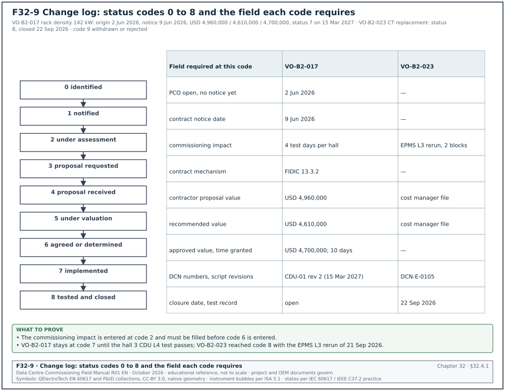
| Field | Type | Required | Example value | Filled by |
|---|---|---|---|---|
| Change number | text | Y | VO-B2-017 | cost manager |
| Potential change order (PCO) number | text | Y | PCO-B2-0071 | cost manager |
| Title | text | Y | rack density increase to 142 kW in B2 halls 1 to 3 | cost manager |
| Origin | pick list | Y | owner request (OPR revision) | cost manager |
| Origin document | text | Y | owner's project requirements (OPR) rev 4; owner letter OWN/GC-A/0233 | cost manager |
| Contract mechanism | text | Y | FIDIC 13.3.2 request for proposal | contract administrator |
| Date of origin | date | Y | 2 Jun 2026 | cost manager |
| Contract notice date | date | Y | 9 Jun 2026 | contract administrator |
| Status | code 0 to 9 | Y | 6, agreed or determined | cost manager |
| Contractor proposal value | money | Y at code 4 | USD 4,960,000 | cost manager |
| Recommended value | money | Y at code 5 | USD 4,610,000 | cost manager |
| Approved value | money | Y at code 6 | USD 4,700,000 | Engineer |
| Time claimed and granted | working days | Y | 15 claimed, 10 granted | Engineer |
| Commissioning impact | text | Y | 4 added test days per hall | CxM |
| Design change notice (DCN) numbers | list | Y at code 7 | DCN-M-0142, DCN-E-0097 | document control |
| ITP and script revisions | list | Y at code 7 | ITP-MEC-CDU-001 rev 3; CX-L4-B2-DH3-CDU-01 rev 2 | CxM |
| Closure date | date | Y at code 8 | open | CxM |
Worked example: Two rows of the B2 change log on 15 Mar 2027. The second row is the CT ratio change described in section 08.15.
| Field | VO-B2-017 | VO-B2-023 |
|---|---|---|
| Title | rack density increase to 142 kW in B2 halls 1 to 3 | block main meter CT replacement, B2-DH3 blocks 07 and 08 |
| Origin | owner request (OPR rev 4) | commissioning finding, Cx issue ISS-B2-1412 |
| Linked documents | owner letter OWN/GC-A/0233 | RFI-B2-ELE-0388; DCN-E-0105 |
| Status | 7, implemented | 8, tested and closed |
| Proposal / recommended / approved | USD 4,960,000 / 4,610,000 / 4,700,000 | values per the cost manager's file (example) |
| Time claimed and granted | 15 / 10 working days | none |
| Commissioning impact | 4 added test days per hall; CDU L4 script rev 2 | EPMS L3 rerun for 2 blocks |
| Script revisions | CX-L4-B2-DH3-CDU-01 rev 2 | CX-L3-B2-DH3-EPMS-04 rerun 21 Sep 2026 |
| Closure | open until the hall 3 L4 CDU test passes | closed 22 Sep 2026 |
Common errors:
- Commissioning impact left blank at approval. A change approved without the test days and script revisions arrives at the CxM after the schedule is fixed. The CxM fills the impact field before status 6.
- Change closed at "implemented". Status 7 means the work is built. Status 8 needs the commissioning record that shows the changed system tested.
- Defect logged as a change. A finding that the contractor's work does not meet the contract is a defect. It is recorded as an NCR or a Cx issue, and section 08.12 gives the decision.
- Notice date missing. A change without its contract notice date cannot be checked against the FIDIC 28-day or NEC4 8-week notice periods (section 08.16).
32.4.2Decision log form
Purpose: The decision log records each decision made by a manager on the programme with its owner, the options considered, the reason, the cost, the contract effect and the actions. It links each decision to the confirming email sent the same working day. It gives the CxM a dated record of who decided what, which protects the test programme when a verbal decision is later disputed.
| Field | Type | Required | Example value | Filled by |
|---|---|---|---|---|
| Decision number | text | Y | DL-B2-031 | CxM within 1 working day |
| Date and time made | date-time | Y | 17 Feb 09:12 | CxM |
| Where made | text | Y | programme director's office, with CxM and GC project manager | CxM |
| Decision | one sentence | Y | approve option B of OT-B2-007 | CxM |
| Decision owner | name, role | Y | programme director | CxM |
| Options considered | reference | Y | OT-B2-007 options A, B, B2, C | CxM |
| Reason | text | Y | meets ready for service (RFS) 14 March at lowest added cost | CxM |
| Cost and funding | money, source | Y | USD 46,000 from programme contingency | CxM |
| Contract effect | text | Y | GC instruction needed for second crew | CxM |
| Actions | list with owners and dates | Y | GC mobilise second crew 21 Feb; CxM revise IST script 23 Feb | CxM |
| Confirming email | link | Y | email 17 Feb 09:40 | CxM |
| Replies | text | N | GC PM confirmed 17 Feb 10:15 | CxM |
| Status | open, closed, superseded | Y | open | CxM |
| Superseded by | text | Y if superseded | blank | CxM |
Worked example: Decision DL-B2-044 on a deferred L4 retest for the CDU pump changeover in hall B2-DH3 (an example built on the fields above).
| Field | Entry |
|---|---|
| Decision number | DL-B2-044 |
| Date and time made | 19 Mar 2027 16:30 |
| Where made | weekly Cx coordination meeting B2, meeting 52, item 52.6 |
| Decision | Start IST preparation for B2-DH3 on 29 Mar 2027 with the CDU 07 changeover retest set as a hold point of IST S16. |
| Decision owner | owner commissioning lead |
| Options considered | A: delay IST preparation one week until retest RT1 passes; B: start IST preparation and make the retest an IST prerequisite |
| Reason | option B keeps the IST window; the retest is needed only before S16 |
| Cost and funding | none |
| Contract effect | none; no instruction needed |
| Actions | controls integrator: retest BMS-L4-B2-DH3-CDU-SEQ-01-RT1 by 25 Mar 2027; CxM: add hold point to IST-B2-DH3-S16 by 22 Mar 2027 |
| Confirming email | CxM email to attendees 19 Mar 2027 17:05 |
| Replies | controls integrator confirmed 19 Mar 2027 17:40 |
| Status | closed 25 Mar 2027 (retest passed: changeover 8 s against ≤ 10 s) |
Common errors:
- Decision written as a discussion. "Discussed IST start" is not a decision. The decision field is one sentence that someone can act on.
- No confirming email. A verbal decision recorded only in the log is disputed later. The confirming email is sent the same working day and its link is entered.
- Disagreement not recorded. When the CxM recommended a different option, the entry says so: "CxM recommended option A; programme director decided option B".
- Superseded decisions left open. A later decision that replaces DL-B2-031 is entered with its own number, and DL-B2-031 is marked superseded with the new number.
32.5Safety and energisation forms

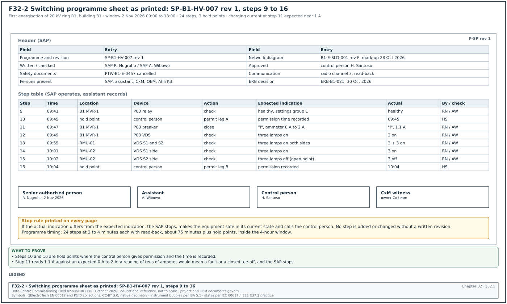
32.5.1Permit to work (PTW) form
Purpose: The PTW is the written authority to do one task in one place for one period under stated precautions. The permit issuer, the area authority and the permit receiver sign it, and it carries a briefing record and a hand-back. It is defined in sections 10.1.3 permit types, 10.1.4 fields of the permit form and 10.1.5 life cycle. On a partly live data-centre campus the PTW is the document that keeps a work party away from energised equipment and links the task to its isolation certificate.
| Field | Type | Required | Example value | Filled by |
|---|---|---|---|---|
| Permit number | text, unique | Y | PTW-B1-E-0457 | PTW coordinator (pre-printed or system) |
| Permit type | pick list | Y | electrical isolation | permit issuer |
| Building, level, room | pick list | Y | B1, L1, MV switch room MVR-1 | permit receiver |
| Equipment tags | text list | Y | B1-MVS-01 panels P03 to P05 | permit receiver |
| Task description | text | Y | terminate 20 kV cable B1-F2-C1 at panel P04 | permit receiver |
| MSRA references | document numbers with revision | Y | MS-ELE-031 rev C, RA-ELE-031 rev C | permit receiver |
| Hazards identified | check list | Y | stored energy, adjacent live panel P06, induced voltage | permit issuer |
| Isolation certificate number | text | Y for isolation permits | IC-B1-HV-0112 | isolating authority |
| Precautions | check list and text | Y | earth switch P04 closed and locked, barrier at P06 | permit issuer |
| Personal protective equipment (PPE) | check list | Y | arc-rated clothing 8 cal/cm², insulating gloves class 2 | permit issuer |
| Valid from, valid to | date and time | Y | 31 Oct 2026 07:30 to 17:30 | permit issuer |
| Permit issuer signature and time | signature | Y | A. Pratama, 07:20 | permit issuer |
| Area authority signature | signature | Y | R. Hidayat, 07:22 | area authority |
| Permit receiver signature and time | signature | Y | D. Saputra, 07:25 | permit receiver |
| Work party briefing signatures | list | Y | 6 names | each worker |
| Suspension record | time, reason, signatures | Y if suspended | 12:00 to 13:00 lunch, permit held by issuer | issuer and receiver |
| Hand-back declaration | check box and signature | Y | work complete, tools removed, guards replaced | permit receiver |
| Cancellation | signature and time | Y | 16:50, A. Pratama | permit issuer |
Worked example: Electrical isolation permit for work on UPS system B2-DH3-UPS-A1 under isolation certificate IC-B2-LV-0388 (section 10.2.5). The request was submitted at least 2 working days before the work (section 10.1.5, step 1).
| Field | Entry |
|---|---|
| Permit number and type | PTW-B2-E-0901; electrical isolation |
| Location | B2, level 01, UPS room A of data hall 3 |
| Equipment | B2-DH3-UPS-A1, output terminals and maintenance bypass QF5 |
| Task | replace the output surge protective device of UPS A1 module 2 |
| MSRA | MS-ELE-118 rev 0, RA-ELE-118 rev 0 (example numbers) |
| Hazards | DC link stored energy; battery string 545 V DC; adjacent live UPS A2 |
| Isolation certificate | IC-B2-LV-0388, proving dead at 09:42 to 09:51, key safe KS-B2-07 |
| Precautions | barrier and signs at UPS A2; DC link discharge wait of 10 minutes recorded; voltage detector proved before and after |
| PPE | arc-rated clothing per the arc flash label; insulating gloves rated for the DC voltage |
| Validity | 31 Oct 2026 10:00 to 17:30 |
| Signatures | issuer M. Rahman 09:58; area authority R. Hidayat 09:59; receiver D. Saputra 10:02 |
| Briefing | 4 workers signed; 4 personal locks applied to the group lock box of KS-B2-07 |
| Hand-back | 16:05, work complete, guards replaced, 4 personal locks removed |
| Cancellation | 16:15, M. Rahman |
Common errors:
- Permit issued without a joint walk-down. The issuer signs in the permit office. The issuer and the receiver walk the area together and check each precaution before either signs (section 10.1.5, step 5).
- Validity past the shift. A permit valid from 07:30 to 07:30 the next day covers two shifts with one briefing. Electrical isolation permits are valid for one shift and renewed daily.
- Isolation removed before cancellation. The isolating authority removes the locks when the receiver hands back. Only after cancellation can the isolating authority remove the isolation.
- Briefing signed by the supervisor only. Each worker signs the briefing section and applies a personal lock. A permit with one briefing signature for six workers is suspended.
32.5.2Lockout/tagout (LOTO) record: isolation certificate and lock register
Purpose: The LOTO record has two parts. The isolation certificate lists every energy source, isolation point, lock and the proving-dead result of one isolation, and the lock and tag register tracks each lock from application to removal. It is defined in sections 10.2.5 isolation certificate, 10.2.6 group lockout and 10.2.7 lock and tag register. Together they are the record of the six steps of OSHA 29 CFR 1910.147 and of the electrically safe work condition of NFPA 70E-2024 for one item of equipment.

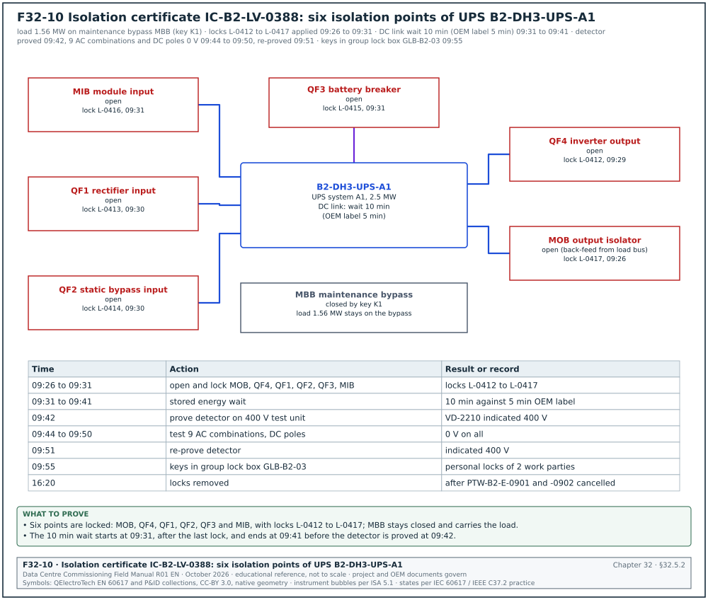
| Field | Type | Required | Example value | Filled by |
|---|---|---|---|---|
| Isolation certificate number | text | Y | IC-B2-LV-0388 | isolating authority |
| Equipment to be made safe | tag and description | Y | B2-DH3-UPS-A1, UPS system A1, 2.5 MW, two 1,250 kW modules | isolating authority |
| Energy sources | table: source, device, tag | Y | module input breaker (MIB), rectifier input QF1, static bypass input QF2, battery QF3, inverter output QF4, back-feed from the live load bus through the module output breaker (MOB) | isolating authority |
| Isolation points | table: device, position, lock number | Y | QF4 open, lock L-0412; QF1, QF2, QF3, MIB and MOB open, locks L-0413 to L-0417 | isolating authority |
| Stored energy release | text and time | Y | DC link discharge 5 min per OEM label; waited 10 min | isolating authority |
| Proving dead record | table: point, phases, instrument serial, result | Y | 9 combinations, 0 V | isolating authority |
| Instrument proved before and after | check boxes and times | Y | 09:42 and 09:51 | isolating authority |
| Earths applied | table: location, earth number | Y for MV | not applicable at LV | isolating authority |
| Safety key safe number | text | Y | KS-B2-07 | isolating authority |
| Isolating authority signature | signature and time | Y | M. Sihombing, 09:55 | isolating authority |
| Permits issued under this isolation | list | Y | PTW-B2-E-0901, PTW-B2-E-0902 | PTW coordinator |
| Isolation removal | signature, time, condition | Y | after all permits cancelled | isolating authority |
| Lock number (register) | text | Y | L-0412 | isolating authority |
| Lock type, device and position (register) | pick list, tag | Y | safety lock (red), B2-DH3-UPS-A1-QF4, open | isolating authority |
| Applied and removed by, time (register) | name and time | Y | M. Sihombing, 09:29 and 16:20 | isolating authority |
Worked example: Isolation certificate IC-B2-LV-0388 for UPS B2-DH3-UPS-A1 with its lock register rows (sections 10.2.5, 10.2.7 and the isolation programme in section 10.4). Before the isolation the load of 1.56 MW is transferred to the maintenance bypass breaker (MBB), which stays closed by key K1 and carries the load during the work. The proving-dead test uses the live-dead-live method: the detector is proved on a known live source before and after the test (section 10.3.2). Figure F32-10 shows the six isolation points and the times of the certificate.
| Item | Device or point | Position or result | Lock or instrument | Time |
|---|---|---|---|---|
| Source 1 | output isolator MOB (back-feed from the load bus) | open | L-0417 | 09:26 |
| Source 2 | inverter output QF4 | open | L-0412 | 09:29 |
| Source 3 | rectifier input QF1 | open | L-0413 | 09:30 |
| Source 4 | static bypass input QF2 | open | L-0414 | 09:30 |
| Source 5 | battery breaker QF3 | open | L-0415 | 09:31 |
| Source 6 | module input MIB | open | L-0416 | 09:31 |
| Stored energy | DC link | OEM label 5 min; waited 10 min | not applicable | 09:31 to 09:41 |
| Prove detector | known live source, 400 V test unit | indicated 400 V | detector s/n VD-2210 | 09:42 |
| Test | output L1-L2, L2-L3, L3-L1, L1-N, L2-N, L3-N, L1-PE, L2-PE, L3-PE | 0 V on all 9 | VD-2210 | 09:44 to 09:49 |
| Test | DC busbar positive to negative, each pole to protective earth (PE) | 0 V | VD-2210 | 09:50 |
| Re-prove detector | known live source | indicated 400 V | VD-2210 | 09:51 |
| Key safe | keys L-0412 to L-0417 in group lock box GLB-B2-03 | locked; key safe KS-B2-07 between shifts | personal locks of the 2 work parties | 09:55 |
| Removal | all 6 locks removed after PTW-B2-E-0901 and -0902 cancelled | restored | M. Sihombing | 16:20 |
Common errors:
- One energy source missed. A UPS has a module input, a rectifier input, a static bypass input, a battery, an inverter output and a back-feed path from the live load bus through the output isolator. A certificate that lists only the input breaker leaves the battery, the bypass and the back-feed live. The energy sources table is copied from the as-built single-line diagram.
- Detector not re-proved after the test. A detector that failed during the test reads 0 V on a live conductor. The certificate records both proving times and the instrument serial number.
- Lock keys outside the key safe. The isolating authority keeps a lock key in a pocket. Keys go in the numbered key safe, and the key safe is locked by the group lock box.
- Lock removed by another person. A lock is removed only by its owner, or under the absent-owner procedure of section 10.2.8 with the written authority it requires.
32.5.3Switching programme sheet
Purpose: The switching programme is the written, checked and approved sequence of switching operations for one network change, with one action per numbered step, the expected indication of each step, the hold points and the signatures. It is defined in sections 10.4.3 format, 10.4.4 approval timeline and 10.4.5 worked example. The senior authorised person (SAP) operates only from the approved programme, and no step is improvised on the day.
Figure F32-2 shows the sheet as it prints.
| Field | Type | Required | Example value | Filled by |
|---|---|---|---|---|
| Programme number and revision | text | Y | SP-B1-HV-007 rev 1 | SAP |
| Purpose | text | Y | first energisation of 20 kV ring R1 of building B1 | SAP |
| Network diagram reference | drawing with revision and date | Y | B1-E-SLD-001 rev F, as-built mark-up 28 Oct 2026 | SAP |
| Date and time window | date, times | Y | 2 Nov 2026, 09:00 to 13:00 | control person |
| Written, checked, approved | names | Y | SAP R. Nugroho; SAP A. Wibowo; control person H. Santoso | each signatory |
| Safety documents affected | list | Y | PTW-B1-E-0457 cancelled; IC-B1-HV-0112 removed | SAP |
| Persons present | list | Y | SAP, assistant, CxM, OEM start-up engineer, Ahli K3 Listrik | SAP |
| Communication | text | Y | radio channel 3, mobile backup, read-back of every step | SAP |
| Preconditions | numbered list | Y | L2 tests signed; relays injection-tested; energisation readiness board (ERB) approval | SAP |
| Step | number, never renumbered after approval | Y | 12 | SAP |
| Time | time | Y during switching | 09:47 | assistant |
| Location | room and panel | Y | B1 L1 ring main unit (RMU) room 2, RMU-02 | SAP |
| Device | tag and device type | Y | RMU-02 ring switch S1 | SAP |
| Action | one operation | Y | close | SAP |
| Expected indication | text | Y | indicator "I", voltage detecting system (VDS) lamps on three phases | SAP |
| Actual indication | text | Y during switching | as expected | assistant |
| Done by, checked by | initials | Y during switching | RN, AW | SAP, assistant |
Worked example: Steps 9 to 16 of SP-B1-HV-007 rev 1 (section 10.4.5). In the MSC-1 worked example two 20 kV feeders of 1,334.6 A each supply B1-MVS-01, and ring R1 loops through RMU-01 to RMU-04 with the normal open point at RMU-02 S2. The expected charging current at step 11 for about 1.2 km of cable is near 1 A; a reading of tens of amperes means a fault or a closed tee-off.
| Step | Time | Location | Device | Action | Expected indication | Actual | By / check |
|---|---|---|---|---|---|---|---|
| 9 | 09:41 | B1 MVR-1 | P03 relay | check | healthy, no trip flags, settings group 1 | healthy | RN / AW |
| 10 | 09:45 | hold point | control person | give permission to energise leg A | permission time recorded | permitted 09:45 | HS |
| 11 | 09:47 | B1 MVR-1 | P03 circuit breaker | close | indicator "I", ammeter 0 A to 2 A | "I", 1.1 A | RN / AW |
| 12 | 09:49 | B1 MVR-1 | P03 VDS | check | three phase lamps on | 3 on | RN / AW |
| 13 | 09:55 | RMU-01 | VDS S1 side and S2 side | check | three lamps on both sides | 3 + 3 on | RN / AW |
| 14 | 10:01 | RMU-02 | VDS S1 side | check | three lamps on | 3 on | RN / AW |
| 15 | 10:02 | RMU-02 | VDS S2 side | check | three lamps off (normal open point holds) | 3 off | RN / AW |
| 16 | 10:04 | hold point | control person | give permission to energise leg B | permission recorded | permitted 10:04 | HS |
The full programme has 24 steps and 3 hold points. With read-back each step takes 2 to 4 minutes, so the 24 steps take about 75 minutes plus the hold points, inside the 4-hour window.
Common errors:
- Two operations in one step. "Open breaker P03 and close earth switch P03" is two steps. A combined step has one expected indication for two device states.
- Programme written from the design drawing. The panel order on site differs after a change. The checker walks the route with the as-built mark-up 5 working days before the switching day.
- Missing check steps. A programme with only "open" and "close" steps has no proof of the state between steps. Every operation is followed by an indication check.
- Step changed on the day. The SAP adds a step in pen. A new or changed step needs a written revision approved by the control person; otherwise the SAP stops, makes the equipment safe in its current state and calls the control person.
32.5.4Energisation certificate
Purpose: The energisation certificate records that a defined scope of equipment was energised under an approved switching programme after the energisation readiness board (ERB) approved it, and it declares the new live boundary. It is defined in sections 10.5.3 gate criteria, 10.5.4 energisation certificate and 10.5.5 energised-zone declaration. It is the document that changes the permit rules in the named rooms from construction rules to live-equipment rules.
| Field | Type | Required | Example value | Filled by |
|---|---|---|---|---|
| Certificate number | text | Y | EC-B1-HV-003 | CxM |
| Scope | text and tag list | Y | ring R1: B1-MVS-01 P03 and P07, RMU-01 to RMU-04 ring switches; tee-offs excluded | CxM |
| Switching programme | text | Y | SP-B1-HV-007 rev 1 | SAP |
| ERB decision | text | Y | ERB-B1-021, approved 30 Oct 2026 | ERB chair |
| Date and time energised | date-time | Y | 2 Nov 2026 09:47 | SAP |
| Network state after energisation | text | Y | ring live, normal open point RMU-02 S2, tee-offs open and locked | SAP |
| Live boundary | text and drawing | Y | B1 MVR-1 and RMU rooms 1 and 2 declared live | CxM |
| Signatures | four signatures | Y | SAP, CxM, owner representative, Ahli K3 Listrik | each signatory |
| Distribution | list | Y | PTW office, control room, all package managers | CxM |
Worked example: Energisation certificate for the first block transformer of hall B2-DH3, energised after the 20 kV ring of building B2 was proved. The block transformer is 2.5 MVA (MSC-1 ledger), with an LV full-load current of 3,478 A at 415 V.
| Field | Entry |
|---|---|
| Certificate number | EC-B2-LV-011 |
| Scope | RMU-03 tee-off breaker T1, block transformer B2-DH3-TX-A1 (2.5 MVA, 20/0.415 kV) and LV main switchboard B2-DH3-LVMSB-A1 incomer; outgoing feeders excluded and locked open |
| Switching programme | SP-B2-HV-012 rev 0 (example number) |
| ERB decision | ERB-B2-034, approved 12 Jan 2027 |
| Gate records checked | L2 IR and turns ratio of TX-A1 signed; LVMSB-A1 L2 checklist signed; relay settings injected; punch A items closed (0 open) |
| Date and time energised | 14 Jan 2027 10:22 |
| Network state after energisation | TX-A1 energised on no load; LVMSB-A1 busbar live; all outgoing breakers open and locked |
| Live boundary | transformer room B2-01-TX1 and LV room B2-01-LV1 declared live; drawing B2-E-ZONE-002 rev 4 |
| Signatures | SAP, CxM, owner representative, Ahli K3 Listrik, 14 Jan 2027 |
| Distribution | PTW office, B2 control room, electrical, mechanical and controls package managers |
Common errors:
- Scope written as "LV room". The certificate names every energised device and every excluded device by tag. A vague scope lets a contractor work on a feeder that became live.
- Live boundary not posted. The certificate is signed but the doors of the new live rooms carry no sign. The energised-zone declaration includes the signs and the access control change.
- ERB decision missing. The equipment is energised on the switching programme alone. The ERB decision number is a required field, because the ERB checks the gate criteria that the switching programme does not.
- Distribution late. The PTW office receives the certificate the next day and issues a construction permit in a room that is now live. Distribution is part of the same-day post-switching report.
32.6Meeting and report forms
32.6.1Minutes of meeting (MOM) form
Purpose: The MOM records who attended a meeting and each item as information, decision or action, with an owner, a due date and the closure evidence for each action. It is defined in sections 11.3.1 minutes template, 11.3.2 rules and 11.4.1 action log. Actions in the minutes are copied to the action log the same day, and each action is tracked to closure in the action log.
| Field | Type | Required | Example value | Filled by |
|---|---|---|---|---|
| Meeting title and number | text | Y | Weekly Cx coordination B1, meeting 34 | minute-taker |
| Date, time, location | date-time, text | Y | 3 Nov 2026, 13:30 to 15:00, site office room 2 and video link | minute-taker |
| Chair | name and company | Y | CxM, owner Cx team | minute-taker |
| Minute-taker | name | Y | Cx coordinator | minute-taker |
| Attendees and absentees | table | Y | 14 present, 2 absent with apologies | minute-taker |
| Previous minutes | accepted or corrected | Y | accepted with one correction to item 33.4 | chair |
| Item number | meeting.item | Y | 34.3 | minute-taker |
| Item type | information, decision, action | Y | decision | minute-taker |
| Item text | full sentences | Y | the L4 test of computer room air handler (CRAH) group 2 moves to 12 Nov | minute-taker |
| Action owner | named person | Y for actions | controls lead | chair |
| Due date | date | Y for actions | 7 Nov 2026 | chair |
| Closure evidence | text | Y for actions | BMS graphics screenshots for CRAH group 2 in the CDE | chair |
| Distribution | list | Y | all attendees, owner PM, DCOps lead | minute-taker |
Worked example: Four items of the weekly Cx coordination meeting of building B2, meeting 52, held on 19 Mar 2027 (items in the format of section 11.3.1).
| Item | Type | Text | Owner | Due | Closure evidence |
|---|---|---|---|---|---|
| 52.3 | information | L3 checklists of the 16 CDUs of B2-DH3 are signed: 16 of 16. | not applicable | not applicable | not applicable |
| 52.4 | action | Enter the lead-wire compensation of 1.3 Ω for the TCS return sensor of B2-DH3-CDU-07 and retest the point (issue ISS-B2-0812). | controls lead | 14 Apr 2027 | P2P retest row signed on P2P-B2-DH3-CDU07 |
| 52.5 | action | Issue the calibration certificate of power quality analyser PQ-07. | test agency lead | 22 Mar 2027 | certificate in the CDE folder M&TE/B2 |
| 52.6 | decision | IST preparation for B2-DH3 starts on 29 Mar 2027; the CDU 07 changeover retest is a hold point of IST S16 (DL-B2-044). | owner Cx lead | not applicable | decision log DL-B2-044 |
Common errors:
- Actions without a named person. "Controls to fix" names a company. The action owner is a named person who can be called.
- Minutes written as a transcript. Minutes record decisions and actions in full sentences. A record of who said what makes the decisions hard to find.
- Actions not copied to the action log. The action exists only in meeting 52 minutes and is forgotten by meeting 54. The minute-taker enters every action in the action log the same day with the source "52.4".
- Distribution after a week. Minutes issued a week later reach the owners after their due dates. MSC-1 issues minutes within 1 working day.
32.6.2Daily commissioning report form
Purpose: The daily report records, for one building and one shift, the commissioning personnel on site and the checklists and tests completed, passed and failed. It also records the issues raised and closed, the blockers and the tests planned for the next day. It is defined in sections 11.5.1 purpose and content and 11.5.2 daily report fields. It is the source of the daily numbers that the weekly report and the S-curves add up.
| Field | Type | Required | Example value | Filled by |
|---|---|---|---|---|
| Report number | text | Y | DR-B1-2026-11-05 | contractor Cx lead |
| Date | date | Y | 5 Nov 2026 | contractor Cx lead |
| Building and halls | pick list | Y | B1, DH2 and DH3 | contractor Cx lead |
| Author | name | Y | contractor Cx lead | contractor Cx lead |
| Cx personnel on site | number by company | Y | 38 (contractor 22, OEM 9, CxA 7) | contractor Cx lead |
| L2 checklists signed today | number by system, with plan | Y | 42 of 45 planned | contractor Cx lead |
| L3 tests passed, failed | numbers | Y | 11 passed, 2 failed | contractor Cx lead |
| L4 tests passed, failed | numbers | Y | 1 passed, 0 failed | contractor Cx lead |
| Issues raised, closed | numbers by category | Y | raised A 0, B 6, C 9; closed B 4, C 12 | contractor Cx lead |
| Blockers | table: blocker, owner, date | Y | 3 | contractor Cx lead |
| Tomorrow's tests | table | Y | 14 tests, 2 owner witnesses | contractor Cx lead |
| Safety events | number and reference | Y | 0 incidents, 1 near miss (reference) | contractor Cx lead |
| Reviewed by | name | Y | CxM | CxM |
Worked example: Daily report DR-B1-2026-11-05 for building B1 (section 11.5.2). The pump vibration limit of 4.5 mm/s is the project specification value quoted in that section; it comes from the pump vibration clause of the project mechanical specification.
| Field | Entry |
|---|---|
| Personnel | 38: contractor 22, OEM 9, CxA 7 |
| L2 checklists | 42 signed against a plan of 45 (93 %): electrical 18, mechanical 15, controls 9 |
| L3 tests | 13 started; 11 passed; 2 failed: B1-DH2-CRAH-09 fan speed feedback reads 0 % at 60 % command; pump B1-CHW-P-03 vibration 7.4 mm/s against 4.5 mm/s |
| L4 tests | 1 passed: UPS B1-DH2-UPS-A1 transfer test with the owner witness present |
| Issues | raised ISS-B1-0912 and ISS-B1-0913 (category B) plus 13 others; raised A 0, B 6, C 9; closed B 4, C 12 |
| Blocker 1 | BMS graphics for CRAH group 2; controls lead; 7 Nov 2026 |
| Blocker 2 | calibration certificate of the power quality analyser; test agency; 6 Nov 2026 |
| Blocker 3 | permit conflict in the level 2 riser; PTW coordinator; 6 Nov 2026 |
| Tomorrow | 14 tests planned; 2 owner witnesses needed |
| Safety | 0 incidents |
| Reviewed | CxM, 5 Nov 2026 19:10 |
Common errors:
- Counts without the plan. "42 checklists signed" does not show whether the day was on plan. The report gives the planned number beside the actual number.
- Failures without the value. "Pump failed" gives no information. The report states the measured value and the limit, for example 7.4 mm/s against 4.5 mm/s.
- Blocker without an owner and date. A blocker that nobody owns stays a blocker. Each row names the owner and the date by which it is cleared.
- Numbers that do not match the registers. The daily report says 11 L3 passes while the test register shows 10. The daily numbers are taken from the registers, never typed from memory.
32.6.3Weekly commissioning report form
Purpose: The weekly Cx report gives the owner and the programme managers the status of commissioning for one building in twelve fixed sections. The sections run from a five-line summary to the detailed appendix, and each number is taken from a named register. It is defined in sections 11.6.2 sections of the weekly report, 11.6.3 calculation rules and 11.6.4 worked example. It is the record that the programme reviews against the schedule milestones of energisation, L4 completion, IST and ready for service (RFS). Figure F32-11 shows the test and issue counts of sections 5 and 7 of report WR-B2-2027-W12.

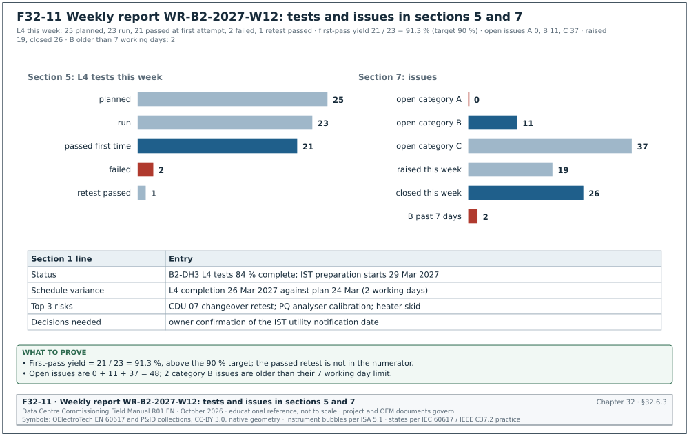
| Field | Type | Required | Example value | Filled by |
|---|---|---|---|---|
| Report number and week | text | Y | WR-B2-2027-W12 | CxM |
| Period | dates | Y | 15 to 21 Mar 2027 | CxM |
| 1 Summary | five lines | Y | status, schedule variance, top 3 risks, decisions needed, next milestones | CxM |
| 2 Safety | numbers | Y | incidents, near misses, permit audits | PTW register, safety log |
| 3 Milestones | planned and forecast dates per hall | Y | energisation, L4 complete, IST, RFS | P6 schedule |
| 4 L2 checklists | planned, actual, cumulative per system | Y | S-curve | checklist register |
| 5 L3 and L4 tests | planned, passed, failed, retest, first-pass yield | Y | first-pass yield % | test register |
| 6 L5 IST readiness | prerequisites status | Y | number of prerequisites met | IST readiness tracker |
| 7 Issues | open by category and age; raised and closed; top 10 | Y | numbers | issues log |
| 8 Actions | open, overdue, ageing bands | Y | numbers | action log |
| 9 Look-ahead | next three weeks with constraints | Y | table | look-ahead file |
| 10 Documents | scripts approved, reports issued, operation and maintenance (O&M) status | Y | numbers | document register |
| 11 Risks | risk register extract | Y | top risks | risk register |
| 12 Appendix | detailed tables per system | Y | tables | registers |
Worked example: Sections 1, 5 and 7 of weekly report WR-B2-2027-W12 for building B2 (example values). The MSC-1 first-pass yield target is 90 % (case ledger), and the defect ageing limits are 1, 7 and 30 working days for categories A, B and C.
| Section | Entry |
|---|---|
| 1 Summary, status | B2-DH3 L4 tests 84 % complete; IST preparation starts 29 Mar 2027 (DL-B2-044) |
| 1 Summary, schedule variance | L4 completion forecast 26 Mar 2027 against plan 24 Mar 2027 (2 working days late) |
| 1 Summary, top 3 risks | CDU 07 changeover retest; power quality (PQ) analyser calibration; heater skid delivery for IST |
| 1 Summary, decisions needed | owner confirmation of the IST utility notification date |
| 5 L3 and L4 tests | L4 this week: 25 planned, 23 run, 21 passed at first attempt, 2 failed, 1 retest passed; first-pass yield 21 / 23 = 91.3 % against target 90 % |
| 7 Issues | open: A 0, B 11, C 37; raised this week 19, closed 26; B items older than 7 working days: 2 |
Common errors:
- First-pass yield calculated on retests. A retest that passes is counted as a pass in the first-pass yield. First-pass yield counts only tests that passed at the first run, divided by tests run (section 11.6.3).
- Summary longer than five lines. The readers of section 1 read nothing else. The summary is five lines and each line carries a number or a date.
- Sections dropped when empty. A week with no safety events omits section 2. Every section appears every week, with "none" where it applies, so the report can be compared week to week.
- Forecast dates without a reason. A milestone moves by two weeks with no explanation. The milestone table gives the reason and the decision or issue number behind each change.
32.7Test record forms

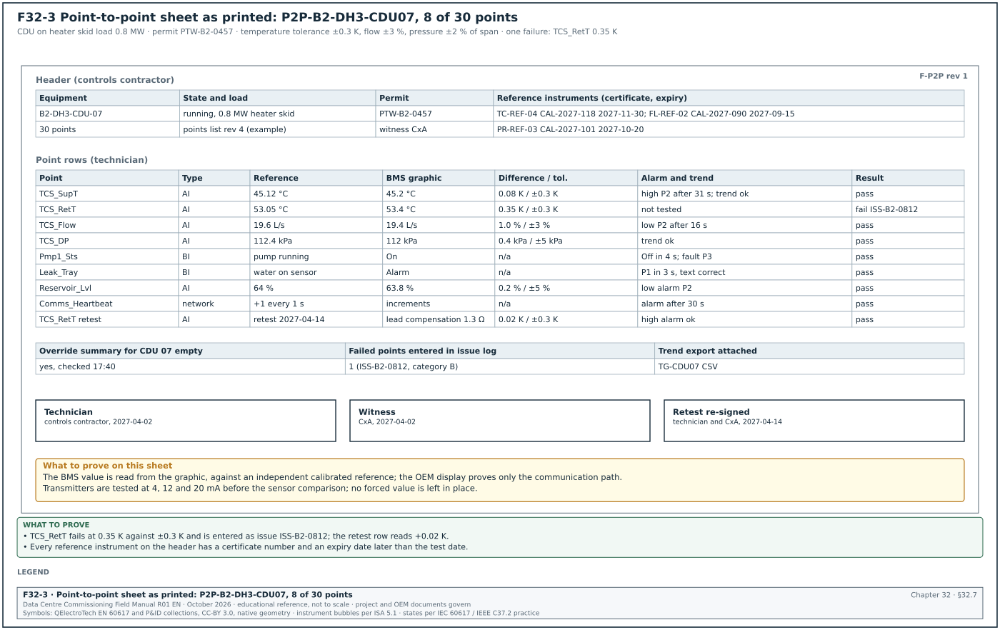

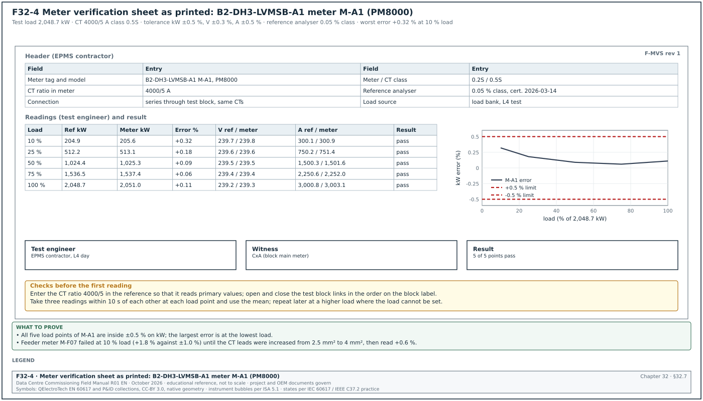
32.7.1Level 3 (L3) checklist form
Purpose: The L3 checklist records the start-up and the component-level checks of one item of equipment. It holds the prerequisites, the OEM start-up steps, the settings file version and the measured values with their acceptance values and sources. It also holds the point checks, the local alarms and the findings. It is defined in sections 03.8.1 structure, 03.8.2 filled L3 checklist for a UPS module and 03.16.2 record identifier. It is signed by the OEM, the contractor and the CxA, and its signature releases the L3 gate and the green tag of the item.
| Field | Type | Required | Example value | Filled by |
|---|---|---|---|---|
| Checklist ID and revision | text | Y | ELE-L3-UPS-B2-DH3-A1-M2-01 rev 0 | CxA |
| Template revision | text | Y | template L3-UPS rev 3 (example) | CxA |
| Asset tag | text | Y | UPS module 2 of B2-DH3-UPS-A1 | CxA |
| Date | date | Y | 2027-02-24 | CxA |
| Energisation permit number | text | Y | EP-B2-0418 | contractor |
| Prerequisites | rows: L2 signed, settings approved, instruments calibrated | Y | ELE-L2-UPS-B2-DH3-A1-01 signed | CxA |
| Row number | number | Y | 13 | template |
| Check | text | Y | output voltage at no load | template |
| Method and instrument | text | Y | true rms multimeter | template |
| Acceptance and source | value, tolerance, clause | Y | 400 V ±1 % (specification 26 33 53 2.4.C) | template |
| Result | measured value with unit | Y | 401, 400, 401 V | performer |
| Initials | text | Y | OEM | performer |
| Settings file name and version | text | Y | UPS-B2-A1-SET v1.3 | OEM |
| Findings | issue numbers or "none" | Y | none | CxA |
| Signatures | OEM, contractor, CxA with dates | Y | three signatures, 2027-02-24 | each signatory |
| Gate record | text | Y at gate | GATE-L3-B2-DH3-UPS-A1-M2 | CxA |
Worked example: Ten of the 28 rows of L3 checklist ELE-L3-UPS-B2-DH3-A1-M2-01 rev 0 for UPS module 2 of block B2-DH3-A1 (section 03.8.2). The block UPS system is 2.5 MW (MSC-1 ledger). The values are examples; the approved OEM start-up procedure and specification 26 33 53 govern.
| No. | Check | Acceptance and source | Result | Initials |
|---|---|---|---|---|
| 3 | Instruments | in date, serial numbers recorded | Fluke 1587 FC, due 2027-09 | CxA |
| 6 | Earth continuity, module frame to main earth bar | ≤ 0.1 Ω (specification 26 05 26) | 0.012 Ω | CON |
| 8 | Input voltage phase to phase | 400 V ±10 % (OEM manual) | 409, 411, 408 V | OEM |
| 11 | Battery internal ohmic values | each block within 25 % of the string average (practice per IEEE 1188; the battery OEM limit governs) | max deviation 7 % | CON |
| 12 | Settings file loaded | file name and version as approved | UPS-B2-A1-SET v1.3 | OEM |
| 13 | Output voltage at no load | 400 V ±1 % (specification 26 33 53 2.4.C) | 401, 400, 401 V | OEM |
| 17 | Module parallel sharing at 20 % load bank | module currents within ±5 % of the average (example value from the UPS OEM parallel-system commissioning procedure) | 2.1 % | OEM |
| 19 | Local alarm: input fail | alarm on display and to EPMS within 5 s | display yes; EPMS 2.4 s | EPMS |
| 21 | EPMS points | point-to-point record EPMS-L3-B2-DH3-UPS-A1: 100 % of points pass | 48 of 48 | EPMS |
| 24 | Event log time | within 1 s of the campus time server | 0.3 s | EPMS |
All 28 rows passed and the checklist was signed by the OEM start-up engineer, the electrical contractor and the CxA on 2027-02-24.
Common errors:
- Settings file version not recorded. A later setting change cannot be traced to the tested version. Row 12 is filled on every L3 checklist.
- Alarm checked on the display only. The EPMS and BMS paths are then unproven. The alarm rows record the arrival time at the EPMS or BMS.
- Acceptance column blank on the template. The performer writes "ok" because the template gives no value. Every acceptance cell carries a value and its source before the template is approved.
- Ohmic values without the string average. The deviation rule needs the average, so the row records the average beside the maximum deviation.
32.7.2Level 4 (L4) functional test script page
Purpose: The L4 script page is one page of a functional performance test script. It holds the header that identifies the script and its revision, and the step table. Each step in the table has one action, the expected response from the sequence of operation, the acceptance value with its source, the measured value, the result and the witness initials. It is defined in sections 03.9.1 script anatomy, 03.9.2 step table columns and 03.9.3 filled 20-step chiller staging script. A step result is pass, fail or not tested, and a script status is not started, passed, failed or retest.

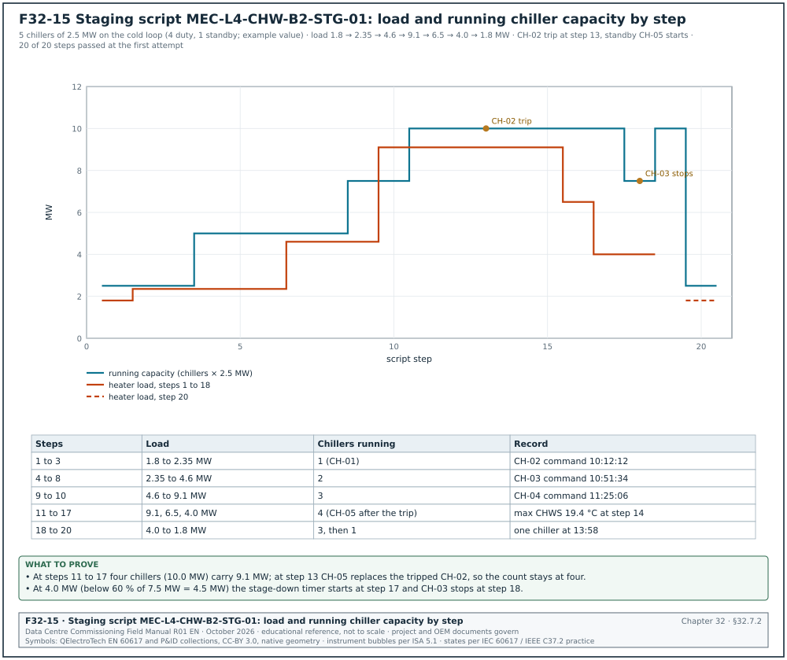
| Field | Type | Required | Example value | Filled by |
|---|---|---|---|---|
| Script ID and revision | text | Y | MEC-L4-CHW-B2-STG-01 rev C | CxA |
| CDE number | text | Y | MSC1-CXA-B2-01-RP-CX-4031 | document controller |
| System and assets | text | Y | B2 chilled-water plant, CH-01 to CH-05 | CxA |
| References | OPR, specification and sequence clauses | Y | OPR-5.4; SOO-B2-CHW rev C 4.1 to 4.9 | CxA |
| Prerequisites confirmed | list | Y | L3 signed; trend group TG-CHW-01 at 10 s; heater skids connected; permit | CxA |
| Instruments | list with accuracy and calibration | Y | ultrasonic flow meter ±1 %; reference thermometer ±0.1 K | CxA |
| Stop criteria | text | Y | stop if the chilled water supply temperature (CHWS) exceeds 21.0 °C for 2 min | CxA |
| Step | number | Y | 13 | template |
| Action | one action naming the device and the command | Y | trip CH-02 by opening its control circuit | template |
| Expected response | from the sequence of operation | Y | fault alarm; standby CH-05 starts | template |
| Acceptance and source | value, tolerance, time, clause | Y | alarm at BMS ≤ 10 s; CH-05 command ≤ 3 min (SOO 4.7) | template |
| Measured | value with unit or time stamp | Y | alarm 4 s; command 1 min 50 s | performer |
| Result | pass, fail, not tested | Y | pass | performer |
| Initials | witness initials | Y | CxA | witness |
| Page signatures | contractor, CxA | Y | initials per page | each signatory |
Worked example: Page 2 of script MEC-L4-CHW-B2-STG-01 rev C with steps 10 to 14 (section 03.9.3). The plant serves the B2 air halls on the cold loop and has five chillers of 2.5 MW each (four duty, one standby). This is an example value sized from the MSC-1 cold-loop duty of 36.5 MW for the campus. The warm-loop trim chillers of chapter 18 are a separate plant of 8 duty and 1 standby units of 2,500 kW. The chilled water supply setpoint is 18.0 °C and the return 24.0 °C (MSC-1 ledger). The test ran on 14 Apr 2027 with heater skids HS-01 to HS-04 (4 × 2.5 MW) as the load.
| Step | Action | Expected response | Acceptance and source | Measured | Result |
|---|---|---|---|---|---|
| 10 | Raise load to 9.1 MW quickly | temperature-based stage-up | CH-04 commanded when CHWS > 18.8 °C for 5 min (SOO 4.4) | CHWS 18.9 °C at 11:20:05; command 11:25:06 | pass |
| 11 | Observe CH-04 start and recovery | four chillers running; CHWS recovers | ≤ 18.8 °C within 10 min of CH-04 running (SOO 4.4) | 18.3 °C at 11:33 | pass |
| 12 | Check that CH-05 does not start | standby stays off | no command while four duty chillers run (SOO 4.2) | no command | pass |
| 13 | Trip CH-02 by opening its control circuit (OEM) | fault alarm; standby CH-05 starts | alarm at BMS ≤ 10 s; CH-05 command ≤ 3 min (SOO 4.7) | alarm 4 s; command 1 min 50 s | pass |
| 14 | Observe CHWS during the fault | excursion limited | CHWS ≤ 20.0 °C; recovery to 18.3 °C within 15 min (SOO 4.7, OPR-5.4) | max 19.4 °C; 18.3 °C after 11 min | pass |
The full script passed 20 of 20 steps at the first attempt, which gives a first-pass yield of 100 % for the script. Figure F32-15 shows the heater load and the running chiller capacity for all 20 steps of the script (section 03.9.3).
Common errors:
- Two actions in one step. "Trip CH-02 and observe CHWS" mixes an action and an observation. Steps 13 and 14 are separate, each with its own acceptance value.
- Timers shortened for the test. The integrator shortens the 10 min stage-up timer to save time. Check the timer values in the controller before step 1 and record them on the page.
- Fault simulated in the BMS. A fault forced in the BMS software does not test the chiller's own fault output. Step 13 opens the chiller control circuit at the chiller.
- "In progress" written as a result. A step result is pass, fail or not tested. A step that cannot be completed is "not tested" with the reason in the measured column.
32.7.3Point-to-point (P2P) sheet
Purpose: The P2P sheet records the test of every BMS point of one piece of equipment along its whole path. The path runs from the physical quantity at the field device through the controller input or output and the BACnet object. It ends at the value shown on the graphic, in the alarm list and in the trend. It is defined in sections 22.6.1 definition and method, 22.6.2 procedure and 22.6.3 filled P2P sheet for CDU 07. The difference between the reference value and the graphic value is judged against the sensor tolerance of section 22.7, and every failed point becomes an issue with a number.
Figure F32-3 shows the sheet as it prints.
| Field | Type | Required | Example value | Filled by |
|---|---|---|---|---|
| Sheet number | text | Y | P2P-B2-DH3-CDU07 | controls contractor |
| Equipment tag | text | Y | B2-DH3-CDU-07 | controls contractor |
| Points on the sheet | number from the points list | Y | 30 | controls contractor |
| Equipment state and load | text | Y | running on heater skid load at 0.8 MW | controls contractor |
| Permit number | text | Y | PTW-B2-0457 | controls contractor |
| Reference instruments | ID, certificate, expiry | Y | TC-REF-04, CAL-2027-118, 2027-11-30 | controls contractor |
| Point name | BACnet object name | Y | TCS_SupT | template from points list |
| Point type | analogue input (AI), analogue output (AO), binary input (BI), binary output (BO), network | Y | AI | template |
| Stimulus | text | Y | reference probe in test well | technician |
| Reference value | value and unit | Y | 45.12 °C | technician |
| BMS graphic value | value and unit | Y | 45.2 °C | technician |
| Difference and tolerance | value and limit | Y | 0.08 K within ±0.3 K | technician |
| Alarm check | limit, delay, class, text | Y if the point has an alarm | high alarm at 47.1 °C: P2 after 31 s | technician |
| Trend check | yes or no | Y | trend shows the step | technician |
| Result | pass, fail | Y | pass | technician |
| Issue number | text | Y if fail | ISS-B2-0812 | CxA |
| Override summary empty | yes or no | Y | yes | technician |
| Signatures | technician, witness | Y | two signatures | technician, CxA |
Worked example: Eight of the 30 rows of P2P sheet P2P-B2-DH3-CDU07 (section 22.6.3). Reference instruments: probe TC-REF-04 (certificate CAL-2027-118, expiry 2027-11-30), clamp-on flow meter FL-REF-02 (CAL-2027-090, expiry 2027-09-15), pressure calibrator PR-REF-03 (CAL-2027-101, expiry 2027-10-20). Permit PTW-B2-0457.
| Point | Reference | BMS graphic | Difference and tolerance | Alarm and trend | Result |
|---|---|---|---|---|---|
| TCS_SupT | 45.12 °C | 45.2 °C | 0.08 K within ±0.3 K | high at 47.1 °C: P2 after 31 s; trend step | pass |
| TCS_RetT | 53.05 °C | 53.4 °C | 0.35 K outside ±0.3 K | not tested before correction | fail, ISS-B2-0812 |
| TCS_Flow | 19.6 L/s | 19.4 L/s | 1.0 % within ±3 % | low at 20.0 L/s: P2 after 16 s | pass; alarm limit to be reviewed with the designer for part load (22.6.3) |
| TCS_DP | 112.4 kPa | 112 kPa | 0.4 kPa within ±2 % of 250 kPa span | trend checked | pass |
| Pmp1_Sts | pump 1 running | On | not applicable | stop pump: Off in 4 s; fault P3 after 10 s | pass |
| Leak_Tray | water on tray sensor | Alarm | not applicable | P1 in 3 s, text "CDU 07 leak tray" | pass |
| Reservoir_Lvl | 64 % (sight glass) | 63.8 % | 0.2 % within ±5 % | low alarm simulated: P2 | pass |
| Comms_Heartbeat | counter +1 every 1 s | increments | not applicable | gateway stopped: alarm after 30 s | pass |
The TCS_RetT failure is issue ISS-B2-0812, category B. A lead-wire compensation of 1.3 Ω was entered and the point was retested on 2027-04-14 with a difference of +0.02 K; the retest row is added to the sheet and the sheet is re-signed.
Common errors:
- Reading the controller instead of the graphic. The graphic can show a different object from the one tested. The BMS value column is read from the graphic.
- Transmitter tested at one value. A 4–20 mA transmitter tested only at room conditions hides a span error. Test transmitters at 4, 12 and 20 mA with a loop calibrator, then compare with the reference.
- OEM display used as the reference. The OEM display reads the same sensor as the BMS and proves only the communication path. Sensor accuracy needs an independent calibrated reference instrument.
- Forced values left in place. A point forced for the test and not released reports a false value for months. The override summary row is filled "empty" before the sheet is signed.
32.7.4Meter verification sheet
Purpose: The meter verification sheet records the comparison of an EPMS meter with a calibrated reference power analyser at several load points. The error on kW, voltage and current is judged against the tolerance for the meter and CT class. It is defined in sections 24.6.1 acceptance tolerance, 24.6.2 procedure and 24.6.3 meter verification sheet. The error is calculated as (meter − reference) / reference × 100, and every error at every load point must be inside the tolerance.
Figure F32-4 shows the sheet as it prints.
| Field | Type | Required | Example value | Filled by |
|---|---|---|---|---|
| Sheet number | text | Y | EPMS-L4-B2-DH3-MV-A1-01 (example) | EPMS contractor |
| Meter tag and model | text | Y | B2-DH3-LVMSB-A1 meter M-A1, PM8000 | EPMS contractor |
| Meter class and CT class | text | Y | 0.2S meter; 0.5S CT | EPMS contractor |
| CT ratio set in the meter | text | Y | 4000/5 A | EPMS contractor |
| Tolerance on kW, V, A | percent | Y | ±0.5 %, ±0.3 %, ±0.5 % | from section 24.6.1 |
| Reference analyser | model, serial, class, certificate date | Y | three-phase analyser, 0.05 % class, certificate 2026-03-14 | test engineer |
| Connection | text | Y | in series through the test block, same CTs | test engineer |
| Load source | text | Y | load bank during L4 | test engineer |
| Load point | percent of block load | Y | 10, 25, 50, 75, 100 % | test engineer |
| Reference and meter kW | numbers, mean of three readings within 10 s | Y | 204.9 / 205.6 | test engineer |
| Error on kW | percent | Y | +0.32 | calculated |
| Reference and meter V, A | numbers | Y | 239.7 / 239.8 V; 300.1 / 300.9 A | test engineer |
| Result per load point | pass, fail | Y | pass | test engineer |
| Witness | name | Y for intake, generator and block main meters | CxA | CxA |
Worked example: Meter verification for B2-DH3-LVMSB-A1 meter M-A1 (PM8000) during the L4 load bank test, at five points of the 2,048.7 kW load-bank test load (section 24.6.3; 3,000 A per phase on the LV main, a different quantity from the 1.5 MW block IT load).
| Load | Ref kW | Meter kW | Error % | Ref A | Meter A | Result |
|---|---|---|---|---|---|---|
| 10 % | 204.9 | 205.6 | +0.32 | 300.1 | 300.9 | pass |
| 25 % | 512.2 | 513.1 | +0.18 | 750.2 | 751.4 | pass |
| 50 % | 1,024.4 | 1,025.3 | +0.09 | 1,500.3 | 1,501.6 | pass |
| 75 % | 1,536.5 | 1,537.4 | +0.06 | 2,250.6 | 2,252.0 | pass |
| 100 % | 2,048.7 | 2,051.0 | +0.11 | 3,000.8 | 3,003.1 | pass |
Check of the 10 % row: (205.6 − 204.9) / 204.9 × 100 = +0.34 % from the rounded values on the sheet; the analyser computed +0.32 % from the unrounded means. Both are inside ±0.5 %. The worst error occurs at the lowest load, which is expected because meter error grows at low current. On the same board, feeder meter M-F07 (PM5000 on a class 0.5 CT, 300/5 A) read +1.8 % at 10 % load against ±1.0 % and failed. The 2.5 mm² CT leads over 18 m were replaced with 4 mm² leads, and the retest gave +0.6 %.
Common errors:
- One load point only. A meter checked only at 50 % load hides the low-current error. The sheet has five load points, or a later repeat when the load cannot be set.
- CT ratio missing from the reference. The reference reads secondary amperes while the meter reads primary amperes. The CT ratio is entered in the reference before the first reading (section 24.6.2, step 4).
- Readings taken at different times. On a varying load, a meter reading and a reference reading 2 minutes apart differ by the load change. Readings are taken within 10 s of each other, three times, and the mean is used.
- Test block links closed in the wrong order. Opening a CT circuit under load produces a dangerous voltage. The links are opened and closed in the order on the test block label, and the meter current is compared before and after.
32.8Fibre test forms
32.8.1Fibre optic (FO) Tier 1 test record
Purpose: The FO Tier 1 test record holds the optical loss test set (OLTS) result of one fibre link at each wavelength. It also records the reference method, the test cords, the loss budget limit, the margin and the polarity. It is defined in sections 26.5.2 loss budget formula, 26.6.2 polarity test and 26.8.5 Tier 1 test record fields. The limit is the ANSI/TIA-568.3-D budget, or the engineered budget where the specification sets one, programmed into the tester before the test.
| Field | Type | Required | Example value | Filled by |
|---|---|---|---|---|
| Link ID | TIA-606 identifier | Y | B2-MDF.R03-U40:01 to CAMPUS-CORE.R11-U38:01 | cabling technician |
| Fibre type | text | Y | OS2 indoor-outdoor | cabling technician |
| Length | m | Y | 1,204 | cabling technician |
| Mated connector pairs and splices | numbers | Y | 2 pairs, 2 splices | cabling technician |
| Loss budget limit | dB per wavelength | Y | 2.70 / 2.70 | calculated |
| Reference method | text | Y | one-jumper | cabling technician |
| Test reference cords | serial numbers | Y | TRC-SM-014, TRC-SM-015 | cabling technician |
| End-face inspection before test | pass, fail | Y | pass both ends | cabling technician |
| Loss at 1310 nm / 1550 nm | dB | Y | 1.26 / 1.42 | tester |
| Margin | dB | Y | 1.44 / 1.28 | tester |
| Polarity | text | Y | A-to-B, as designed | tester |
| Tester | model, serial, calibration date | Y | per certificate | cabling technician |
| Result | pass, fail | Y | pass | tester |
| Operator and date | name, date | Y | cabling technician, 2026-11-03 | cabling technician |
Worked example: Tier 1 record for the OS2 campus link from the building B2 main distribution frame (MDF) to the campus core (section 26.5.3). Budget = 1.20 km × 0.5 dB/km + 2 × 0.75 dB + 2 × 0.3 dB = 0.60 + 1.50 + 0.60 = 2.70 dB at both wavelengths. The 10GBASE-LR channel insertion loss limit of 6.2 dB in IEEE 802.3 Clause 52 is higher, so the TIA budget governs. The 6.2 dB value is 10 km × 0.42 dB/km plus 2 dB of connection loss, as listed for Clause 52 in IEEE P802.3dj task force paper stassar_3dj_optx_01a (April 2023).
| Field | Entry |
|---|---|
| Link ID | B2-MDF.R03-U40:01 to CAMPUS-CORE.R11-U38:01 |
| Fibre type and length | OS2 indoor-outdoor; 1,204 m from sheath markings |
| Components | 2 mated connector pairs (panels at each end); 2 fusion splices (building entrances) |
| Limit at 1310 nm and 1550 nm | 2.70 dB and 2.70 dB |
| Reference method and cords | one-jumper reference; TRC-SM-014 and TRC-SM-015 |
| End-face inspection | both ends pass to IEC 61300-3-35 after cleaning |
| Loss at 1310 nm | 1.26 dB, margin 1.44 dB |
| Loss at 1550 nm | 1.42 dB, margin 1.28 dB |
| Polarity | A-to-B, as designed |
| Result | pass at both wavelengths |
| Remark | loss rises with wavelength on a fibre with lower attenuation at 1550 nm: OTDR requested to locate a possible bend (record OTDR-B2-MDF-CC-01) |
Common errors:
- Two-jumper reference used with a one-jumper limit. The two-jumper reference removes one connector from the measured loss and gives an optimistic result. The reference method on the record matches the method assumed by the budget.
- Limit typed after the test. The technician enters the limit in the spreadsheet after the tester has run. Program the limit in the tester before the test, so that the tester itself reports pass or fail.
- Length from the drawing. The drawing length differs from the installed length. The length is taken from the sheath markings or the OTDR, and the drawing length is a check only.
- No end-face inspection recorded. A dirty connector raises the loss and can damage the reference cord. The record shows the inspection result before the loss test.
32.8.2Optical time-domain reflectometer (OTDR) record
Purpose: The OTDR record holds the Tier 2 trace settings and the event table of one fibre in each direction. It also holds the bidirectional average of every splice and the pass or fail of each event against its limit. It is defined in sections 26.9.1 what the OTDR shows, 26.9 set-up table and 26.9.7 OTDR event table fields. The bidirectional average, (loss A to B + loss B to A) / 2, is the accepted splice loss on single-mode fibre, because it cancels the gainer effect at splices between fibres with different backscatter. Figure F32-12 shows the trace drawn from the event table of the worked example below.

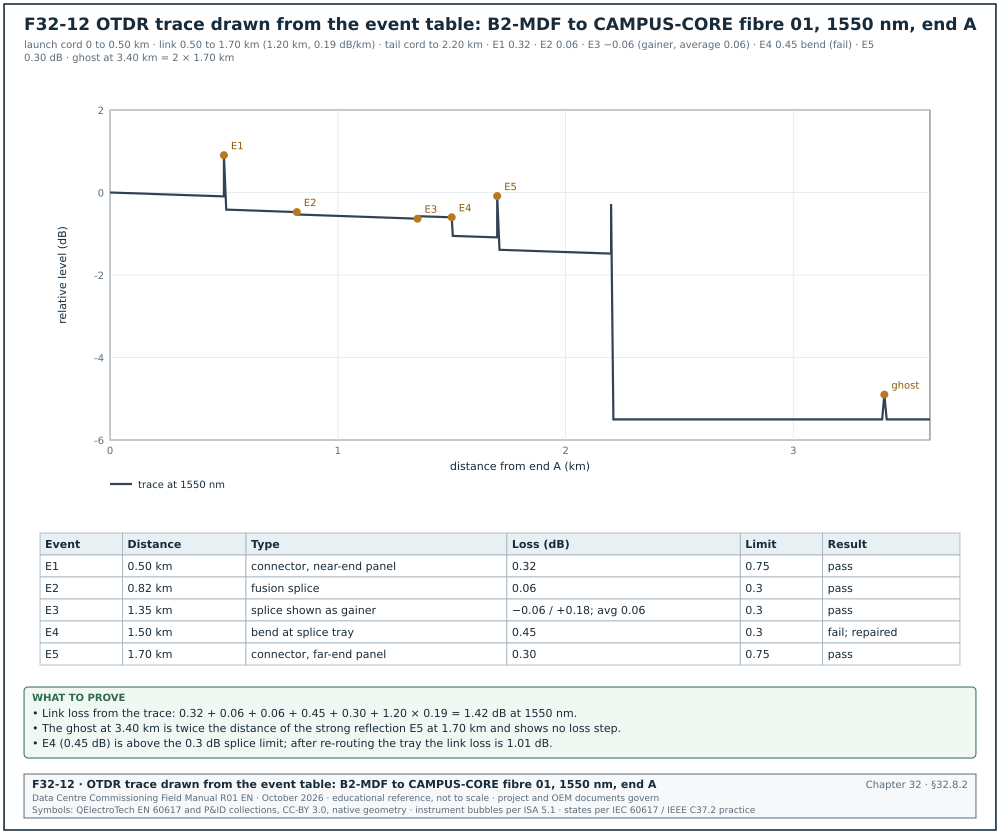
The record shows these set-up values (section 26.9).
| Setting | Value recorded for the MSC-1 link | Reason |
|---|---|---|
| Wavelengths | 1310 and 1550 nm | a bend shows more loss at 1550 nm |
| Pulse width | 30 ns | 10 to 30 ns suits links up to 2 km |
| Range | 2 to 3 times the link length with cords | the end and any ghost are on screen |
| Averaging time | 15 to 30 s | lower noise |
| Index of refraction (IOR) | 1.4682 from the cable datasheet | correct distance |
| Launch and tail cord | 500 m each | moves the dead zone off the first link connector |
| Field | Type | Required | Example value | Filled by |
|---|---|---|---|---|
| Record number | text | Y | OTDR-B2-MDF-CC-01 (example) | cabling technician |
| Link ID and fibre | text | Y | B2-MDF to CAMPUS-CORE, fibre 01 | cabling technician |
| Direction | A to B, B to A | Y | A to B | cabling technician |
| Wavelength and pulse | nm, ns | Y | 1550 nm, 30 ns | cabling technician |
| Launch and tail cord | m, serial number | Y | 500 m LC-SM-L07, 500 m LC-SM-T07 | cabling technician |
| IOR | number | Y | 1.4682 | cabling technician |
| Event number and distance | km | Y | E3, 1.35 km | tester |
| Event type | connector, splice, bend, gainer, end, ghost | Y | gainer | technician |
| Loss | dB, each direction | Y | −0.06 (A to B), +0.18 (B to A) | tester |
| Bidirectional average | dB | Y for splices | 0.06 | calculated |
| Reflectance | dB | Y for reflective events | not applicable for a splice | tester |
| Limit | dB | Y | 0.3 for a splice, 0.75 for a connector pair | TIA-568.3-D values; check -E |
| Result | pass, fail | Y | pass | technician |
| Trace files | SOR or native file names | Y | both directions, both wavelengths | cabling technician |
Worked example: Event table of link B2-MDF to CAMPUS-CORE, fibre 01, at 1550 nm from end A with a 500 m launch cord and a 500 m tail cord (section 26.9 worked example).
| Event | Distance | Type | Loss A to B | Loss B to A or average | Limit | Result |
|---|---|---|---|---|---|---|
| E1 | 0.50 km | connector, near-end panel | 0.32 dB | not applicable | 0.75 dB | pass |
| E2 | 0.82 km | fusion splice, entrance | 0.06 dB | average recorded | 0.3 dB | pass |
| E3 | 1.35 km | splice shown as gainer | −0.06 dB | +0.18 dB; average 0.06 dB | 0.3 dB | pass |
| E4 | 1.50 km | bend at splice tray | 0.45 dB | 0.12 dB at 1310 nm | 0.3 dB | fail; repaired |
| E5 | 1.70 km | connector, far-end panel | 0.30 dB | not applicable | 0.75 dB | pass |
| Ghost | 3.40 km | echo of E5 (2 × 1.70 km) | no loss step | not applicable | none | recorded only |
Total from the trace: 0.32 + 0.06 + 0.06 + 0.45 + 0.30 + 1.20 km × 0.19 dB/km = 1.42 dB at 1550 nm, which agrees with the Tier 1 result. After the tray at E4 was re-routed to the minimum bend radius, the link loss was 1.01 dB.
Common errors:
- One direction only. A single-direction trace reports the gainer at E3 as −0.06 dB and hides the real loss. Splice loss is the average of the two directions, so the record holds both traces.
- No launch cord. Without the 500 m launch cord the near-end connector sits in the OTDR dead zone and its loss cannot be measured.
- Ghost logged as a fault. A spike beyond the fibre end with no loss step, at twice the distance of a strong reflection, is a ghost. It is recorded and the strong reflection is cleaned.
- Wrong IOR. A default IOR shifts every event distance and the bend at E4 is searched for at the wrong place. The IOR is taken from the cable datasheet and written on the record.
32.9Integrated test and issue forms

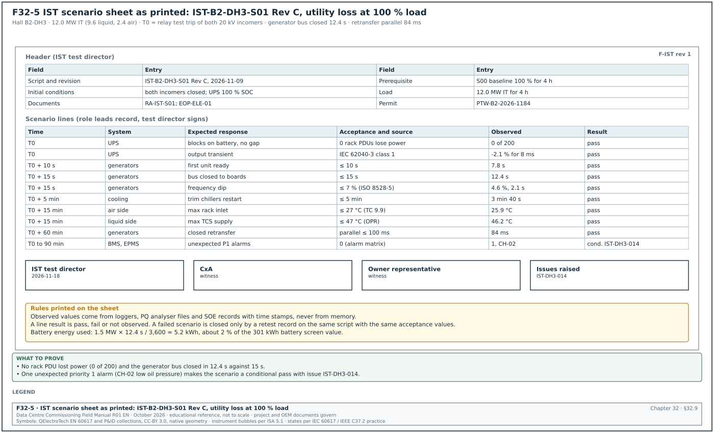
32.9.1Integrated systems test (IST) scenario sheet
Purpose: The IST scenario sheet records one Level 5 failure scenario of a data hall against time from the initiating action. Each line gives the system, the expected response, the acceptance value and its source, the observed value with its time stamp and the result of each line. It is defined in sections 03.10.2 scenario sheet columns, 28.3.2 script header fields, 28.3.3 step format and 28.11 script S01. A line result is pass, fail or not observed, and a failed scenario is closed only by a retest record on the same script with the same acceptance values (section 28.15.3).
Figure F32-5 shows the sheet as it prints.
| Field | Type | Required | Example value | Filled by |
|---|---|---|---|---|
| Script number and revision | text | Y | IST-B2-DH3-S01 Rev C, approved 2026-11-09 | IST test director |
| Scenario title | text | Y | utility loss at 100 % load and return to utility | IST test director |
| Systems involved | list | Y | MV, LV, generators, UPS, chilled water (CHW), CDU, CRAH, BMS, EPMS | IST test director |
| Initial conditions | list | Y | both incomers closed; 12.0 MW IT load for 4 h; CHW 18 °C | IST test director |
| Load required | MW | Y | 12.0 IT (9.6 liquid, 2.4 air) | IST test director |
| Prerequisite scenarios | list | Y | S00 baseline at 100 % for 4 h | IST test director |
| Risk assessment, emergency operating procedure (EOP), method of procedure (MOP), permit | numbers | Y | RA-IST-S01; EOP-ELE-01; PTW-B2-2026-1184 | IST test director |
| Time | offset from T0 | Y | T0 + 15 s | template |
| System | pick list | Y | generators | template |
| Expected response | from the sequence and the basis of design (BOD) failure narrative | Y | generators synchronised, bus closed | template |
| Acceptance and source | value, time limit, source | Y | bus closed ≤ 15 s (specification) | template |
| Observed | value and time stamp | Y | 12.4 s | role lead |
| Result | pass, fail, not observed | Y | pass | role lead |
| Issue number | text | Y if fail or conditional | IST-DH3-014 | IST test director |
| Signatures | test director, CxA, owner | Y | three signatures | each signatory |
Worked example: The filled sheet of scenario S01 for hall DH3 of building B2 (section 28.11 and 28.11.1). T0 is the relay test trip of both 20 kV incomers B2-MV-IN-1 and IN-2. The generator bus load acceptance is 12.0 MW × power usage effectiveness (PUE) 1.22 = 14.6 MW (MSC-1 ledger).
| Time | System | Expected response | Acceptance and source | Observed | Result |
|---|---|---|---|---|---|
| T0 | UPS | all 8 blocks on battery, no output gap | 0 rack power distribution units (PDUs) lose power (OPR) | 0 of 200 | pass |
| T0 | UPS | output voltage transient | inside IEC 62040-3 class 1 curve | −2.1 % for 8 ms, block A6 | pass |
| T0 + 10 s | generators | first unit ready | ≤ 10 s (specification) | 7.8 s | pass |
| T0 + 15 s | generators | bus closed to mechanical boards | ≤ 15 s (specification) | 12.4 s | pass |
| T0 + 15 s | generators | frequency dip at mechanical pickup | ≤ 7 % (ISO 8528-5:2022 class G3, RF-15 row 5) | 4.6 % (47.7 Hz), 2.1 s | pass |
| T0 + 5 min | cooling | trim chillers restarted | ≤ 5 min (sequence) | 3 min 40 s | pass |
| T0 + 15 min | air side | highest rack inlet temperature | ≤ 27 °C (ASHRAE Technical Committee (TC) 9.9) | 25.9 °C at T0 + 4 min | pass |
| T0 + 15 min | liquid side | highest TCS supply temperature | ≤ 47 °C (OPR) | 46.2 °C at T0 + 3 min | pass |
| T0 + 15 min | UPS | lowest battery state of charge | ≥ 30 % (specification) | 98 % | pass |
| T0 + 60 min | generators | closed-transition retransfer | parallel ≤ 100 ms | 84 ms | pass |
| T0 to T0 + 90 min | BMS, EPMS | unexpected priority 1 alarms | 0 (alarm matrix) | 1, CH-02 low oil pressure | conditional pass, IST-DH3-014 |
The battery supplied the block for the 12.4 s from T0 to the generator bus closing. At a block load of 1.5 MW this is 1.5 × 12.4 / 3,600 = 0.0052 MWh = 5.2 kWh, about 2 % of the 301 kWh battery screen value (MSC-1 ledger).
Common errors:
- Observed column filled from memory. The observed values are written after the scenario from what the leads remember. Each observed value comes from a logger, a PQ analyser file or an SOE record with its time stamp.
- Acceptance without a source. "Temperature acceptable" cannot be judged. Each acceptance value names the OPR, the specification, the standard or the OEM data it comes from (section 28.7.1).
- Conditional pass with no issue. An unexpected alarm is noted and forgotten. A conditional pass always carries an issue number, here IST-DH3-014.
- Initial conditions not proven. The scenario starts with the load below 12.0 MW or the batteries below 100 %. Hold point 1 at T0 − 15 min confirms the load, the loggers and the breaker positions before T0.
32.9.2Commissioning issue log form
Purpose: The issue log is the ASHRAE Standard 202 issues and resolution log. It lists each issue found during commissioning with its source record, category, responsible party, due date, corrective action and the retest that closes it. It is defined in sections 03.11.1 purpose and fields, 09.9.1 issues log and 28.15.3 issue log fields for IST. The due date follows from the category ageing limit, and the issue is closed only with the record of the retest or verification.
| Field | Type | Required | Example value | Filled by |
|---|---|---|---|---|
| Issue ID | text | Y | ISS-B2-1240 | CxA |
| Date raised | date | Y | 2027-03-18 | CxA |
| Raised by | name and role | Y | CxA | CxA |
| Building, hall, system | codes | Y | B2, DH3, CDU | CxA |
| Asset tag | text | Y | B2-DH3-CDU-07 | CxA |
| Level | L0 to L6 | Y | L4 | CxA |
| Source record | record ID and step | Y | BMS-L4-B2-DH3-CDU-SEQ-01 step 18 | CxA |
| Description with value and limit | text | Y | pump changeover took 14 s; acceptance ≤ 10 s | CxA |
| Category | A, B, C | Y | B | CxA |
| Type | design, installation, configuration, test procedure, OPR | Y | configuration | CxA |
| Linked records | RFI, NCR, DCN, change numbers | N | none | CxA |
| Responsible party | company | Y | controls integrator | CxA |
| Due date | date from the category ageing limit | Y | 2027-03-29 | calculated |
| Corrective action | text | Y at close | proportional-integral-derivative (PID) output ramp changed; changeover delay reduced | responsible party |
| Evidence of closure | record ID | Y at close | retest BMS-L4-B2-DH3-CDU-SEQ-01-RT1 | CxA |
| Status | open, ready for verification, closed | Y | closed | CxA |
| Closed by and date | name and date | Y at close | CxA, 2027-03-23 | CxA |
Worked example: Four rows of the issue log of building B2 on 25 Mar 2027 (rows from sections 03.11.1, 09.9.1, 22.6.3 and 28.11.1). Category B has a limit of 7 working days.
| Issue | Source record | Description | Category | Responsible | Status and evidence |
|---|---|---|---|---|---|
| ISS-B2-1240 | BMS-L4-B2-DH3-CDU-SEQ-01 step 18 | pump changeover 14 s against ≤ 10 s | B | controls integrator | closed 2027-03-23; RT1 changeover 8 s |
| ISS-B2-1412 | L3 load bank test, block 04 | meter reads 75 % of true current: CT ratio setting 3,000/5 A, CT nameplate 4,000/5 A | A | EPMS integrator, switchboard manufacturer | closed 22 Sep 2026; CX-L3-B2-DH3-EPMS-04 rerun |
| ISS-B2-0812 | P2P-B2-DH3-CDU07, TCS_RetT | sensor reads 0.35 K high against ±0.3 K | B | controls contractor | closed 2027-04-14; retest row +0.02 K |
| IST-DH3-014 | IST-B2-DH3-S01 | unexpected P1 alarm CH-02 low oil pressure during restart | B | chiller OEM | open; retest in S01 retest 1 |
The MSC-1 form uses one field, category A, B or C, with the definitions and ageing limits of section 09.8.2. The rule is stated in section 09.9.1, and sections 03.11.1, 28.15.3 and 30.2.4 use the same field. When a contractor's own system uses P1 to P3, the CxM states the mapping to A, B and C in the Cx plan.
Common errors:
- Description without the measured value and the limit. "Changeover slow" cannot be retested against anything. The description gives the measured value and the acceptance value.
- Closed on the contractor's word. An issue moves to "ready for verification" when the contractor reports the fix, and to "closed" only when the CxA records the retest record ID.
- Two schemes for urgency in one log. A log that uses P1 to P3 for some rows and A to C for others cannot produce one ageing report. One field and one scheme are used.
- Source record missing. An issue without its record and step cannot be retested on the same script. The source record field is required.
32.10Handover forms
32.10.1Turnover package checklist
Purpose: The turnover checklist records, for one system, the receipt and review status of each of the 13 sections of the turnover package, from the index and contacts to the open items list. Each section shows the items expected, received, accepted and rejected. It is defined in sections 12.3.1 what a turnover package is, 12.3.2 worked example and 12.3.3 review procedure. The document controller checks completeness within 2 working days, the reviewers check content within 10 working days, and the DCOps lead signs the acceptance sheet.
| Field | Type | Required | Example value | Filled by |
|---|---|---|---|---|
| Package number | text | Y | TP-B1-CHW-01 | contractor |
| System | text | Y | chilled-water plant, building B1 | contractor |
| Transmittal number and date received | text, date | Y | transmittal and date (example) | document controller |
| Completeness check result and date | pass or return, date | Y | pass, within 2 working days | document controller |
| Section number and name | 1 to 13 | Y | 3 As-built drawings | template |
| Items expected | number | Y | 46 | CxM |
| Items received | number | Y | 46 | document controller |
| Items accepted, rejected | numbers | Y | 41, 5 | reviewer |
| Review status per section | A, B, C, D | Y | C | reviewer |
| Comment reference | text | Y if B or C | RS-TP-B1-CHW-01 item 1 | CxM |
| Resubmission due | date | Y if C | 10 working days after the comment sheet | CxM |
| Final acceptance | name, date | Y at acceptance | DCOps lead | DCOps lead |
Worked example: First review of turnover package TP-B1-CHW-01 for the chilled-water plant of building B1 (section 12.3.2). Seven of the 13 sections are fully accepted.
| Section | Expected | Received | Accepted | Rejected | Status and note |
|---|---|---|---|---|---|
| 3 As-built drawings | 46 | 46 | 41 | 5 | C: 5 P&ID sheets show valve tags that differ from the labels |
| 5 O&M manuals | 13 | 13 | 11 | 2 | C: generic chiller manual; pump manual has no parts list |
| 6 Test records | 1,180 | 1,174 | 1,174 | 0 | C: 6 L3 records missing for valves V-B1-CHW-055 to 060 |
| 8 Asset data | 140 | 140 | 128 | 12 | C: 12 rows missing serial numbers |
| 10 Warranties | 21 | 19 | 19 | 0 | C: dosing set and pressurisation units missing |
| 12 Software and configuration | 3 | 2 | 2 | 0 | C: plant manager backup missing |
| 13 Open items | 1 | 1 | 1 | 0 | A: 17 open issues, 0 category A |
Common errors:
- Package assembled per subcontractor. The operations team works by system, so a package that follows the subcontract boundaries is returned. The checklist is per system.
- Counts without the expected number. "46 drawings received" means nothing without the expected count from the drawing register. The expected column is filled before the package arrives.
- Software backups omitted. Section 12 is left empty because controller backups are "with the integrator". Controller backups and licences are part of the package and are handed over under control.
- Open items list accepted with category A items. A package with an open category A issue is not ready for acceptance. Section 13 shows the count of open items by category.
32.10.2Training record form
Purpose: The training record proves that a session of an approved training module was delivered to named members of the operations team. It records the attendance time, the assessment results, the follow-up for anyone who failed and the location of the recording. It is defined in sections 12.9.1 training plan, 12.9.2 procedure and 12.9.3 training record fields. The training plan sets a pass mark of 80 % (section 12.9.1), and the record of section 12.9.3 counts the attendees present for at least 90 % of the session.
| Field | Type | Required | Example value | Filled by |
|---|---|---|---|---|
| Session ID | text | Y | TRN-B1-CHW-02-S3 | trainer |
| Module ID and title | text | Y | TRN-B1-CHW-02, chiller operation, alarms and emergency shut-down | trainer |
| Date and time | date, times | Y | 14 Jan 2027, 08:00 to 14:00 | trainer |
| Instructor and qualification | name, text | Y | OEM service engineer, factory-authorised | trainer |
| Attendees | names, roles, shift team | Y | 7 names | trainer |
| Attendance time | per attendee | Y | 7 present for at least 90 % of the session | trainer |
| Assessment method | text | Y | practical demonstration with a checklist | trainer |
| Assessment results | per attendee, percent | Y | 6 passed (82 % to 96 %), 1 failed (70 %) | trainer |
| Pass mark | percent | Y | 80 % | training plan |
| Follow-up | text | Y if anyone failed | failed attendee booked on session S4 | DCOps lead |
| Recording | link | Y | CDE folder Training/B1/CHW | trainer |
| Signatures | instructor, DCOps lead | Y | two signatures | each signatory |
Worked example: Session TRN-B1-CHW-02-S3 for shift team 3 of building B1 (section 12.9.3). The module is 6 hours: 3 hours in the classroom and 3 hours on the plant.
| Attendee | Role | Attendance | Score | Result |
|---|---|---|---|---|
| Shift engineer 1 | shift lead | 6.0 h of 6.0 h | 96 % | pass |
| Shift engineer 2 | mechanical | 6.0 h | 90 % | pass |
| Shift engineer 3 | mechanical | 5.6 h (93 %) | 88 % | pass |
| Shift engineer 4 | electrical | 6.0 h | 85 % | pass |
| Shift engineer 5 | electrical | 6.0 h | 82 % | pass |
| Shift engineer 6 | controls | 5.5 h (92 %) | 84 % | pass |
| Shift engineer 7 | mechanical | 6.0 h | 70 % | fail; booked on session S4 |
Common errors:
- Attendance sheet without times. A signature at the start of the session proves only arrival. The record shows the time present for each attendee.
- No assessment. A record of attendance alone does not prove that the engineer can operate the plant. Each critical module has a practical assessment with a pass mark.
- Failed attendee left without follow-up. The person who scored 70 % is not booked again and later operates the plant alone. The follow-up field names the next session.
- Recording not linked. The session was recorded but the file is not in the CDE. New shift engineers then have no access to it. The recording link is a required field.
32.11How the forms connect

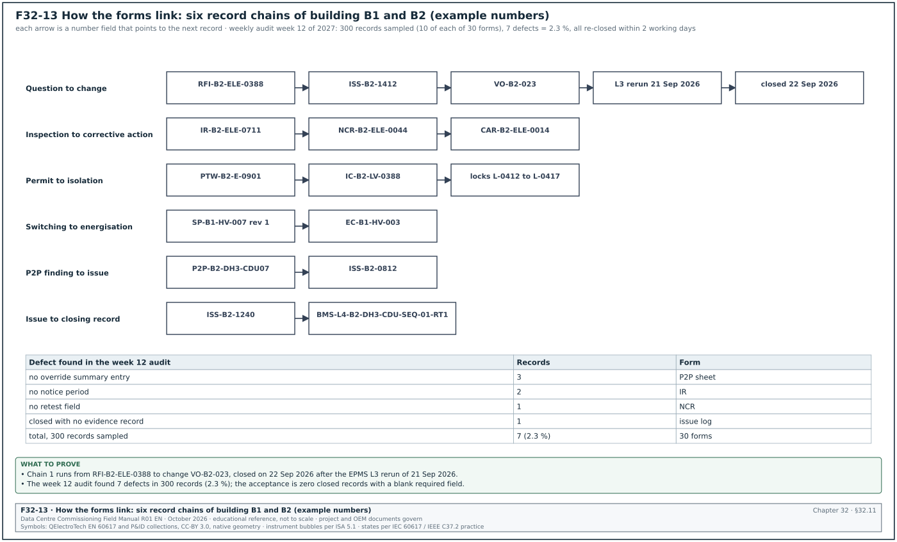
32.11.1Record flow from a question to a closed test
The forms of this chapter link to each other through their number fields. The table shows the links that the CxM checks during the weekly document audit. Figure F32-13 draws six of these chains with their example numbers and the result of the week 12 audit.
| From form | Field that links | To form | Example link |
|---|---|---|---|
| RFI | linked items | NCR, issue log, change log | RFI-B2-ELE-0388 → ISS-B2-1412 → VO-B2-023 |
| IR | re-inspection IR number | NCR | IR-B2-ELE-0711 → NCR-B2-ELE-0044 |
| NCR | CAR number | CAR | NCR-B2-ELE-0044 → CAR-B2-ELE-0014 |
| P2P sheet | issue number | issue log | P2P-B2-DH3-CDU07 → ISS-B2-0812 |
| Issue log | evidence of closure | L3, L4 or IST record | ISS-B2-1240 → BMS-L4-B2-DH3-CDU-SEQ-01-RT1 |
| PTW | isolation certificate number | LOTO record | PTW-B2-E-0901 → IC-B2-LV-0388 |
| Switching programme | programme number | energisation certificate | SP-B1-HV-007 rev 1 → EC-B1-HV-003 |
| MOM | item number | action log, decision log | meeting 52 item 52.6 → DL-B2-044 |
| Change log | ITP and script revisions | ITP, L4 script | VO-B2-017 → CX-L4-B2-DH3-CDU-01 rev 2 |
| Turnover checklist | section 6 test records | L3, L4, IST records | TP-B1-CHW-01 section 6 → 1,180 records |
32.11.2Weekly audit of the forms
Purpose: Find broken links and blank required fields before they reach a witness test or a handover review.
Owner: CxM, with the GC document controller.
Steps:
- Sample ten records per form type. Each Monday the document controller draws ten closed records of each form type from the registers. The sample takes about 2 hours for the 30 forms.
- Check the required fields. Every field marked "Y" in this chapter is filled, or filled "not applicable" with a reason.
- Follow each link. Each linked number opens the linked record in the CDE, and the linked record points back.
- Check the signatures. Each signature has a printed name and role, and each witness signature is from a person on the attendance list of the test.
- Record the result. The audit result is entered in the weekly Cx report, section 10, with the number of records checked and the number of defects found.
Acceptance: Zero closed records with a blank required field; every link opens a record that links back.
Records: Weekly document audit sheet (chapter 04, section 04.14.1); weekly Cx report section 10.
Worked example: In week 12 of 2027 the B2 document controller sampled 300 closed records (10 of each of the 30 forms). Seven defects were found: 3 P2P sheets with no override summary entry, 2 IRs with no notice period, 1 NCR without the retest field and 1 issue log row closed with no evidence record. The defect rate was 7 / 300 = 2.3 %. All seven records were reopened, completed and re-closed within 2 working days.
32.12Checklist for site use
- Use the current template. Check the form code and template revision against the document register before filling a form.
- Fill the header block. Record number, CDE identifier, building, hall, asset tags, revision and status are filled on every form.
- Leave no required field blank. Fill "not applicable" with a reason where a field does not apply.
- Write values with units and sources. Every acceptance value names its source clause; every measured value carries its unit.
- Quote revisions. Every drawing, script, MSRA and ITP reference carries its revision code.
- Name a person. Every action, issue and punch item has a named owner and a due date.
- Sign only what you witnessed. Witness signatures are given at the step, with printed name, role and time.
- Link the records. Fill the linked-item fields so that an RFI, NCR, issue, change and retest can be followed in both directions.
- Close with evidence. An NCR, CAR, punch item or issue is closed only with the record ID of the verification or retest.
- Check permits and isolations together. A PTW number, its isolation certificate and the lock register rows agree before work starts.
- Use the approved switching programme only. No step is added or changed on the day without a written revision.
- Program limits before testing. Fibre budgets, meter tolerances and P2P tolerances are set before the first reading.
- Remove test overrides. Every P2P and L4 sheet records that no forced value or override is left.
- Issue minutes and reports on time. Minutes within 1 working day; the daily report the same day; the weekly report on its fixed day.
- Audit ten records per form each week. Enter the defect rate in section 10 of the weekly Cx report.
32.13Sources
- ISO 19650-1:2018, Organization and digitization of information about buildings and civil engineering works, including BIM, Part 1: Concepts and principles, ISO. https://www.iso.org/standard/68078.html
- ISO 19650-2:2018, Part 2: Delivery phase of the assets, ISO, 2018. https://www.iso.org/standard/68080.html
- ISO 9001:2015, Quality management systems, Requirements, clauses 8.7 and 10.2, ISO. https://www.iso.org/standard/62085.html
- ISO 9000:2015, Quality management systems, Fundamentals and vocabulary, ISO. https://www.iso.org/standard/45481.html
- ASHRAE Guideline 0-2019, The Commissioning Process, ASHRAE, 2019. https://www.ashrae.org/technical-resources/bookstore/commissioning
- ANSI/ASHRAE/IES Standard 202-2024, Commissioning Process for Buildings and Systems, ASHRAE, 2024. https://www.ashrae.org/technical-resources/bookstore/commissioning
- ASHRAE, "Principles of Building Commissioning: ASHRAE Guideline 0 and Standard 202", course slides, 2020, accessed 31 October 2026. https://www.utah.gov/pmn/files/1040363.pdf
- AIA Document G716-2004, Request for Information (RFI), AIA Contract Documents. https://www.aiacontracts.com/
- USACE, NAVFAC and AFCEC, UFGS 01 33 00 Submittal Procedures, Whole Building Design Guide, accessed 31 October 2026. https://www.wbdg.org/FFC/DOD/UFGS/UFGS%2001%2033%2000.pdf
- FIDIC, Conditions of Contract for Construction (Red Book), second edition 2017. https://fidic.org/books/construction-contract-2nd-ed-2017-red-book
- US Occupational Safety and Health Administration, 29 CFR 1910.147 The control of hazardous energy (lockout/tagout), accessed 31 October 2026. https://www.osha.gov/laws-regs/regulations/standardnumber/1910/1910.147
- National Fire Protection Association, NFPA 70E Standard for Electrical Safety in the Workplace, 2024 edition. https://www.nfpa.org/codes-and-standards/nfpa-70e-standard-development/70e
- UK Health and Safety Executive, HSG85 Electricity at work: Safe working practices, third edition, 2013. https://www.hse.gov.uk/pubns/books/hsg85.htm
- ANSI/NETA ATS-2025, Standard for Acceptance Testing Specifications for Electrical Power Equipment and Systems, InterNational Electrical Testing Association, 2025. https://www.netaworld.org/standards/ansi-neta-ats
- IEC 62053-22:2020, Electricity metering equipment, Static meters for AC active energy (classes 0.1 S, 0.2 S and 0.5 S), IEC. https://webstore.iec.ch/en/publication/62001
- Fluke Networks, "Fiber Optic Link Loss Budget Calculation - SimpliFiber Pro", knowledge base, accessed 31 October 2026. https://ru.flukenetworks.com/knowledge-base/simplifiber-pro/loss-budget-calculation-simplifiber-pro
- Fluke Networks, "Cable Testing 101: There's No Gain with Gainers", accessed 31 October 2026. https://flukenetworks.com/blog/cabling-chronicles/cable-testing-101-theres-no-gain-gainers
- IEC 61300-3-35:2022, Visual inspection of fibre optic connectors and fibre-stub transceivers, IEC. https://webstore.iec.ch/en/publication/64254
- ASHRAE Guideline 13-2024, Specifying Building Automation Systems, ASHRAE, 2024. https://webstore.ansi.org/standards/ashrae/ashraeguideline132024
- ASHRAE TC 9.9, Thermal Guidelines for Data Processing Environments, 5th edition, reference card, ASHRAE, 2021. https://www.ashrae.org/file%20library/technical%20resources/bookstore/supplemental%20files/therm-gdlns-5th-r-e-refcard.pdf
- Schneider Electric, White Paper 148, Data Center Projects: Commissioning, Rev 1, accessed 31 October 2026. https://download.schneider-electric.com/doc/SPD_DBOY-6NJNK6_EN/DBOY-6NJNK6_R1_EN.pdf
- NEC, NEC4 Engineering and Construction Contract, 2017 with amendments. https://www.neccontract.com/products/contracts/nec4-ecc
Educational field reference compiled from public standards, guides, manufacturer documents and published incident reports; sources close each chapter. The project specification, the Engineer of Record and the OEM documents govern; check the current edition of every standard before use. Worked examples use an example campus (MSC-1: 4 buildings, 12 halls of 12 MW), not project data. Independent research; not affiliated with any current or former employer. Privacy · Terms.